T018 · 用于先导优化的自动化流程¶
注： 本教程是 TeachOpenCADD 的一部分。TeachOpenCADD 是一个旨在教授领域专用技能，并提供可作为研究项目起点的流程模板的平台。
作者：
Armin Ariamajd, 2021, CADD 研讨课 2021, Charité/Freie Universität Berlin
Melanie Vogel, 2021, CADD 研讨课 2021, Charité/Freie Universität Berlin
Andrea Volkamer, 2021, Volkamer 实验室, Charité
Dominique Sydow, 2021, Volkamer 实验室, Charité
Corey Taylor, 2021, Volkamer 实验室, Charité
Jaime Rodríguez-Guerra, 2021, Volkamer 实验室, Charité
Talia B. Kimber, 2021, Volkamer 实验室, Charité
本教程的目标¶
在本教程中，我们将学习如何开发一个基于结构的自动化虚拟筛选流程。
该流程特别适用于药物发现项目中的 hit 扩展和先导优化阶段，在此阶段中，对有希望的配体（即初始 hit 或先导化合物）进行结构修饰，以提高其对靶标蛋白的结合亲和力和选择性。因此，该流程的总体架构可总结如下（图 1）。
输入
靶标蛋白结构和有希望的配体（例如先导化合物或 hit 化合物），以及需要执行的过程的规格说明。
流程
检测给定蛋白结构中最具成药性的结合位点。
寻找配体的衍生物和结构类似物，并根据药物相似性对其进行过滤。
使用选定的类似物对检测到的蛋白质结合位点进行对接计算。
分析和可视化每个类似物的预测蛋白质-配体相互作用和结合模式。
输出
经优化的新配体结构，具有改善的亲和力、选择性和药物相似性。
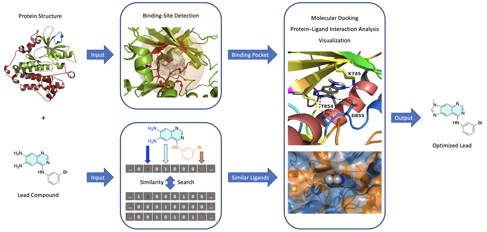
图 1：基于结构的自动化虚拟筛选流程的总体架构。
理论 部分内容¶
药物设计流程
蛋白质结合位点
化学相似性搜索
分子对接
蛋白质-配体相互作用
对接结果的视觉检查
注意： 如果修改了标题，必须同时更新目录标签，以确保交叉引用在我们的网站上正常工作！
实践 部分内容¶
虚拟筛选流程概览
创建新项目
输入数据
处理输入蛋白质数据
处理输入配体数据
结合位点检测
配体相似性搜索
对接计算
蛋白质-配体相互作用分析
选择最佳类似物
整合：全自动化流程
参考文献¶
注：由于每个类别中的参考文献较多，默认情况下隐藏详细信息。
单击此处查看完整参考文献列表。
TeachOpenCADD 教学平台
关于 TeachOpenCADD 计算机辅助药物设计教学平台的期刊文章：D. Sydow et al., J. Cheminform. 2019, 11, 29.
本教程的灵感来源于 TeachOpenCADD 教程 T013-T017
药物设计
Klebe, Wirkstoffdesign, Springer-Verlag (2013)
Hughes et al., Brit. J. Pharmacol. 2011, 162, 6, 1239-1249
Sliwoski et al., Pharmacol. Rev. 2014, 66, 1, 334-395
Leelananda and S. Lindert, Beilstein J. Org. Chem. 2016, 12, 2694-2718
Schneider, Nat. Rev. Drug Discov. 2010, 9, 273-276
Batool et al., Molecules 2019, 24, 1694
结合位点检测
Volkamer et al., J. Chem. Inf. Model. 2010, 50, 11, 2041-2052
Volkamer et al., J. Chem. Inf. Model. 2012, 52, 2, 360-372
相似性搜索
Cereto-Massagué et al., Methods 2015, 71, 58-63
Willett et al., J. Chem. Inf. Comput. Sci. 2001, 38, 25-33
Wang et al., Nucleic Acids Res. 2012, 40, D400-D412
分子对接
Koes et al., J. Chem. Inf. Model. 2013, 53, 8, 1893-1904
程序
[1]:
import sys
if "google.colab" in sys.modules:
%pip install teachopencadd --no-deps -q
!teachopencadd -d 18
%pip uninstall teachopencadd -y -q
%pip install -qr requirements.txt
%conda install openbabel plip smina -y -c conda-forge
理论¶
药物设计流程¶
现代药物发现和开发是一个时间和资源密集的过程，包含多个阶段（图 2）。仅从最初 hit 到临床前阶段就需要大约两到四年，耗资数亿美元。在临床前和临床阶段的失败原因可能包括化合物无效或不可预测的副作用。因此，计算机辅助药物设计流程可以帮助加速药物发现项目，例如通过对化合物进行优先排序。
在本教程中，我们将重点关注流程的 hit-to-lead 和 先导优化 阶段：目标是找到具有改善的结合亲和力、选择性、物理化学和药代动力学性质的类似物。
在本教程中，我们将重点关注流程的 hit-to-lead 和 先导优化 阶段：目标是找到具有改善的结合亲和力、选择性、物理化学和药代动力学性质的类似物。
单击此处了解有关计算机辅助先导优化流程的详细信息。
给定靶标蛋白结构和 hit 或先导化合物，不需要合成各种类似物并在实验室筛选实验中测试它们的效力，而是通过在计算机辅助流程中通过相似性搜索算法获得这些类似物。然后计算它们的物理化学性质，以选择最具药物相似性的类似物进行对接计算。这些计算的结果是对每个化合物与靶标蛋白的亲和力的估计。接着，选择具有最高计算结合亲和力的类似物，并分析其预测结合模式，以选择展现最佳蛋白质-配体相互作用的化合物。此外，通过过滤特定的相互作用，还可以实现对靶标蛋白的增强选择性。
图 2：现代药物发现流程中主要阶段的示意图。图片改编自 Expert Opin. Drug. Discov. 2010, 5, 1039-1045.
蛋白质结合位点¶
结合位点，也称为结合口袋，是蛋白质三维结构中的空腔（图 3）。它们主要存在于蛋白质表面，是蛋白质与其他实体相互作用的主要区域。为了实现有利的相互作用，两个结合伙伴需要具有互补的空间和电子性质（参见锁-钥原理、诱导契合模型）。因此，结合袋残基与（例如小分子配体）之间的分子间相互作用是分子识别的关键因素之一，也因此是配体效力的关键因素之一。
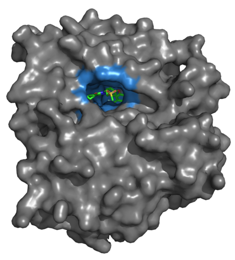
图 3：蛋白质（EGFR；PDB 代码：3W32）的晶体结构，在其主要（正构）结合位点中有共结晶配体。蛋白质表面以灰色显示。结合位点以蓝色显示。配体的碳原子以绿色显示。使用 PyMol 创建的图片。
使用 DoGSiteScorer 进行结合位点检测¶
对于结合位点检测，我们将使用 ProteinsPlus 网络服务器的 DoGSiteScorer 功能。
DoGSiteScorer 是一种基于网格的算法，用于从蛋白质结构中检测结合位点。该算法将蛋白质嵌入三维网格中，然后在网格上滑动探针来计算每个网格点的深度和疏水性等属性。DoGSiteScorer 的另一个功能是它还能计算子口袋（即结合位点内的口袋），并计算这些子口袋的描述符。结合位点可以细分为更小的子口袋（图 4）。结合位点的可药性也可以被评估。
单击此处了解有关 DoGSiteScorer 算法工作方式的更多信息。
对于每个（子）口袋，算法会计算多个描述符，如体积、表面积、深度、疏水性、氢键供体和受体数量等。简而言之，这些值是通过以下方式获得的：
体积：属于口袋的网格点的数量。
表面积：口袋的溶剂可及表面积。
深度：口袋中心与蛋白质表面之间的距离。
疏水性：基于 logP 的相对于口袋体积的疏水性残基的分布。
简单评分（可药性评分）：基于体积和深度进行加权，是结合位点可药性的量度。
药物评分（可药性评分）：结合体积、深度、疏水性和表面属性的加权和，以评估结合袋的可药性。
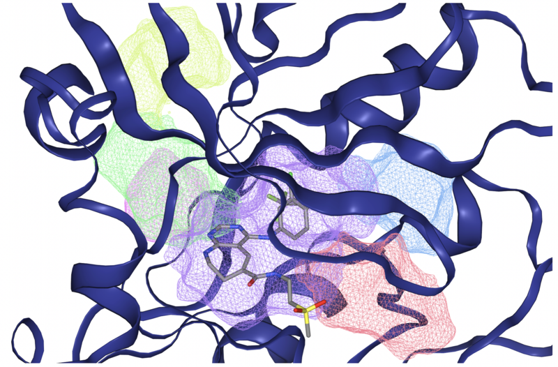
图 4：EGFR 蛋白（PDB 代码：3W32）的一些子口袋（彩色网格体）的可视化，由 DoGSiteScorer 网络服务器检测到。共结晶配体大部分包含在紫色子口袋中。图片摘自 ProteinsPlus 网站。
更多详细信息，请参阅 教程 T014，该教程专注于结合位点检测和 DoGSiteScorer。
化学相似性搜索¶
在实验药物设计流程的 hit 扩展和先导优化步骤中，会化学合成初始 hit/先导化合物的几种衍生物。根据相似性假设，也可以通过从现有化合物的数据库中执行相似性搜索来计算机化地获得类似物。为此，需要化合物的数值描述（图 5）以及用于比较它们的相似性度量。常见的例子是分子指纹描述符以及 Tanimoto 系数。
单击此处了解有关化学描述符和相似性度量的更多信息。
分子最简单的描述符是所谓的 1D 描述符，它们是分子的某种属性的标量值，例如分子质量、辛醇-水分配系数（logP）或总极性表面积（TPSA）。更全面的表示是所谓的 2D 描述符（通常称为分子指纹），其中分子被编码为固定长度的位串，其中 1 和 0 分别表示特定分子特征的存在和不存在。两个分子之间的相似性可以通过例如 Tanimoto 系数来量化，该系数测量了两个位串中共同开启的位与总开启位的比率。
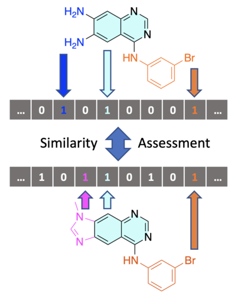
图 5：计算两种化合物之间相似性的过程的简化描述。首先，每种化合物的结构被编码到分子指纹位向量中，其中每位对应例如结构中特定片段的存在与否。然后，可以通过各种度量（例如 Tanimoto 系数）比较指纹向量。将结果映射到 0 到 1 之间的区间，其中 1 表示完美匹配。
请参阅 教程 T004 以进一步熟悉分子相似性测量。
PubChem 数据库¶
在本教程中，我们将使用 PubChem 网络服务 对输入配体执行相似性搜索。PubChem 是一个开放的化学数据库，包含有关各类小分子的信息。
在这里，我们将使用他们的 PUG-REST API，该 API 允许直接对数据库进行相似性搜索，使用自定义子结构指纹作为 2D 描述符，并使用 Tanimoto 相似性度量作为指标。因此，通过提供化合物的标识符（例如 SMILES、CID、InChI 等）并指定相似性阈值和所需的最大结果数，即可通过 PubChem 的 API 获得在给定相似性阈值范围内的一定数量的化合物。
有关从 PubChem 获取数据的更多详细信息，请参阅 教程 T013。
分子对接¶
在靶标蛋白中定义了适当的结合位点并获得了一组靶标配体的类似物之后，下一步是根据每个类似物在结合位点中的位置（也称为结合模式）以及其估计的结合能力来评估每个类似物。该评估是通过使用一种称为分子对接的计算方法进行的。该技术在药物发现中主要用于虚拟筛选，以优先选择那些最可能与靶标蛋白结合的化合物。
该过程的工作原理是对配体在蛋白质结合位点中的构象空间进行采样，并使用评分函数评估每个生成的构象的蛋白质-配体相互作用的能量。通过这样做，可以估计每个类似物的结合亲和力。然后，根据这些估计的亲和力对接纳分对类似物进行排序。
单击此处了解有关对接过程的更多信息。
大多数对接程序需要对蛋白质和配体结构进行一些准备。例如：
氢原子通常不存在于晶体结构中，应添加到蛋白质中。
每个原子的正确质子化状态应根据给定的 pH 值计算。
部分电荷是极性分子间静电相互作用的良好量度，应分配给蛋白质和配体原子。
在某些对接程序中，配合物中的结晶水通常会被去除，但稍后可以在分析结果时将其添加回来。
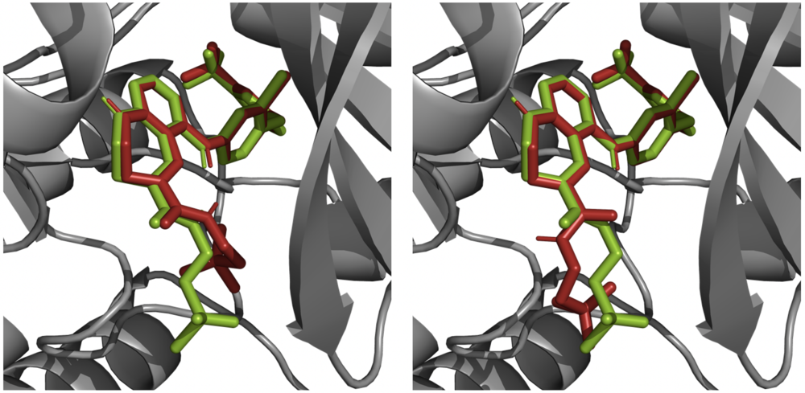
图 6：使用 Smina 程序在重新对接实验中生成的两个对接姿势（红色）的示例，叠加在相应的蛋白质结构（EGFR；PDB 代码：3W32）上，并与天然结合配体（绿色）进行比较。使用 PyMol 创建的图片。
在本教程中，我们将使用 Smina 对接程序，它是对接程序 AutoDock Vina 的一个开源分支，重点改进了评分函数和能量最小化。它默认使用自定义的经验评分函数，但也支持用户参数化的评分函数。
此外，为了准备用于对接实验的蛋白质和配体结构（如上所述），我们还将使用 OpenBabel 程序的 Python 包 Pybel。
有关蛋白质-配体对接的更多详细信息，请参阅 教程 T015。
蛋白质-配体相互作用¶
蛋白质和配体之间的非共价分子间相互作用是分子识别的基础。根据结合伴侣的不同，这些相互作用的数量、类型和强度决定了结合亲和力、选择性和生物效应。虽然蛋白质-配体相互作用在蛋白质-配体晶体结构中经常被研究，但它们也存在于蛋白质-蛋白质、蛋白质-DNA/RNA 或蛋白质-小分子相互作用中。
虽然这些相互作用中最常见的部分是通过对接算法的评分函数估算的，但明确分析它们在对接计算生成的结合模式中的表现也是有用的。这些信息可用于验证计算的结合姿态，或通过选择那些与蛋白质中特定突变或非保守残基相互作用的化合物，在选择性方面缩小最佳先导化合物的选择。
在本教程中，我们将使用 PLIP 包——蛋白质-配体相互作用分析器（PLIP）的 Python 包。PLIP 是一个开源程序，可通过选择位于预定距离阈值内的原子对（一个来自蛋白质，一个来自配体）来分析任何给定蛋白质-配体复合物结构中的蛋白质-配体相互作用。然后，它根据电子和几何标准识别选定对之间的潜在相互作用。
对于每种检测到的相互作用，都会输出一组信息，包括相互作用类型、配体和蛋白质中涉及的原子，以及每种相互作用类型特有的其他性质。然后，这些结果可用于可视化蛋白质-配体相互作用（图 7）或通过分析来帮助选择结合亲和力和选择性最佳的类似物。
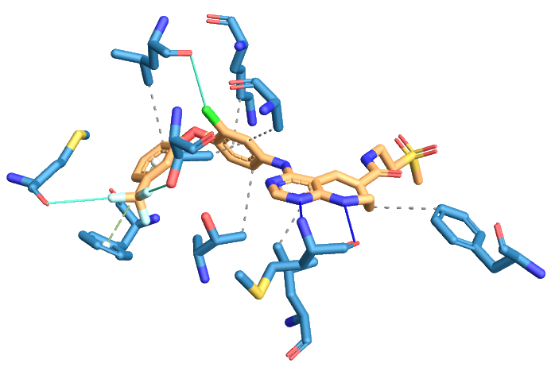
图 7：蛋白质-配体复合物（EGFR；PDB 代码：3W32）中蛋白质-配体相互作用的可视化，由 PLIP 网络服务检测。蛋白质方面只显示相互作用的残基。蛋白质和配体碳原子分别以蓝色和棕色显示。疏水相互作用以灰色虚线显示。氢键以蓝线表示。π-堆叠相互作用以绿色虚线显示。卤键以青色线表示。图片摘自 PLIP 网站。
有关蛋白质-配体相互作用的更多详细信息，请参阅 教程 T016。
对接结果的视觉检查¶
对计算的对接姿势及其相应的蛋白质-配体相互作用的视觉检查是不可避免的。虽然对于大型化合物库来说这可能是一个瓶颈，但手动检查可以帮助识别错误的结合模式或化合物。
选择结合模式时最需要考虑的一些因素包括：
与靶标蛋白可用晶体结构中实验观察到的结合模式的相似性
立体和电子的互补性
配体中非溶剂暴露的极性功能基因应在蛋白质中有相互作用伴侣
配体中不存在暴露于溶剂的疏水部分
评估口袋中的水分子及其对结合的影响
如果有多种结合模式，可能的结合模式的总结
为了可视化结果，我们使用 NGLview，这是一个 Jupyter 小部件，用于在 notebook 中显示交互式 3D 分子结构。
为了可视化结果，我们使用 NGLview，这是一个 Jupyter 小部件，它使用基于 WebGL 的 NGL JavaScript 库在 notebook 中显示交互式 3D 分子结构。
有关 NGLview 高级使用的更多详细信息，请参阅 教程 T017。
实践¶
在本节中，我们将逐步实现并演示自动化先导优化流程。
技术说明： 所提供的流程在 Ubuntu、macOS 和 Windows 上均可稳定运行，但在不同操作系统之间比较时结果略有差异（详情请参阅 GH issue）。
首先，设置用于加载和保存数据的绝对路径。
[3]:
%load_ext autoreload
%autoreload 2
[4]:
from pathlib import Path
HERE = Path(_dh[-1])
DATA = HERE / "data"
由于维护原因，我们在流程的两个步骤中使用了冻结的数据集，否则每次执行此 notebook 时都会返回略有不同的结果：
PubChem 相似性搜索：由于 PubChem 数据库不断更新，对同一配体执行的相似性搜索在不同时间可能会产生不同的结果。
Smina 分子对接：在 Smina 中，小分子在对接前使用 OpenBabel 生成低能结构。由于某种原因，这个过程会引入随机性。
因此，我们提供了一个辅助类 FrozenData（位于 utils 文件夹中），它使用预计算的数据集。为此，在导入后，我们使用初始项目的实例化 FrozenData 类。在你想自己运行流程的实际步骤中，我们会帮助你正确使用 FrozenData 来解冻数据集。
[5]:
# If you want to unfreeze the datasets, please set `USE_FROZEN_DATASETS` to False
USE_FROZEN_DATASETS = True
[6]:
from utils import FrozenData
frozen_data_project1 = FrozenData("Project1", USE_FROZEN_DATASETS)
frozen_data_project2 = FrozenData("Project2", USE_FROZEN_DATASETS)
虚拟筛选流程概览¶
由于这是一个相对较大的项目，具有多个不同的功能，因此很自然地会想到使用 类（classes）。我们将这些类组织成类似于流程中的处理序列的方式，这对于按形式和功能组织程序非常有用。这样做时，代码将结构清晰，更易于理解、维护、重用和扩展。
单击此处了解有关在面向对象编程中使用类、方法、属性和对象的更多信息。
类是代码模板，通常由多个函数（称为方法）和变量（称为属性）或其他类（称为子类）组成。该模板用于创建具有特定行为和属性的动态程序片段，称为对象。
在程序运行时的任何给定点，对象都处于特定的状态，该状态由对象的属性值决定。然后，可以使用对象可用的方法来更改对象的状态，例如通过更改其现有属性的值或创建新属性。
类可用于在称为实例化的过程中创建任意数量的对象。因此，每个对象都是用于创建它的类的一个实例。实例化通常通过为对象的初始状态提供一组特定值来执行。因此，从同一类创建的所有对象将具有相同类型的行为和属性，但它们可以处于不同的状态。
一个典型的例子是名为 Car 的类，它可以用于创建 car1、car2 等对象。每个汽车对象都将具有通过其类可用的方法（例如 drive()、brake() 等），但其汽车的具体细节取决于类的使用方式（例如，car1 可以是一辆红色轿车，而 car2 可以是一辆蓝色卡车）。
作为第一步，我们将定义一个类 LeadOptimizationPipeline 作为我们项目的容器，并仅用一个名为 name 的属性实例化它。在本教程的其余部分中，我们将使用管道的八个主干类（图 8），并用必要的功能充实它们。
尽管主干类不必以特定顺序定义，但你会看到，随着我们的进行，我们通常可以在一个创建的对象中重用另一个对象的功能。因此，形成了自然的顺序（Specs、然后是 Protein、然后是 Ligand 等）。
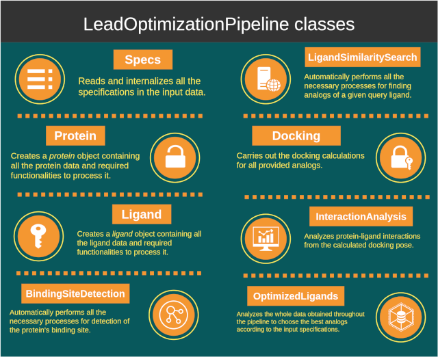
图 8：本教程中流程使用的主要类。
由于每个类背后的代码包含几十行，我们不会在这个 notebook 中直接展示所有代码。这些类存储在单独的文件夹（utils）中，并根据需要导入和使用。如果您想进一步了解执行时的具体操作，可以随时查看这些文件。值得指出的是，但是您完全可以继续学习本教程，而不需要查看所有这些文件。
此外，上述大多数类依赖几个辅助模块（例如 io、pdb、pubchem），这些模块包含辅助主干类操作的功能，例如检索数据或实现执行任务所需的软件。这些辅助模块也存储在单独的文件夹中（utils/helpers）。
单击此处了解有关本教程中实现的辅助模块的更多信息。
``Consts`` 类
为了支持更健壮的流程，我们定义了一个名为 Consts 的数据类，它包含输入数据框中所有可能的关键字，如列名、索引名、主题名、属性等。这些关键字都存储在各自的子类中作为枚举，因此代码的其余部分只需引用枚举名称，而不是它们的值。
单击此处了解有关处理输入数据的更多信息。
在一种”快速而粗糙”的方法中，只要代码需要，就会使用输入数据库中的地址直接调用输入参数。然而，这会导致代码不易维护或扩展。对输入数据的微小更改，例如重命名数据库中的行，都需要相应地修改整个代码。一种更有效的方法是先将所有输入数据内部化到数据类中，这样程序的其余部分只需要与这个类通信，而不是直接与输入数据库通信。
这种方法有几个优点：首先，在执行任何处理之前，数据的完整性就已经被检查。其次，如果输入数据的表示方式发生变化（例如，重命名了数据库中的行），则只需要调整这个内部化过程。最后，代码的其余部分可以通过统一的方式访问数据，而无需关心其来源。通过将所有数据和有关数据的信息存储在同一个类中，这种架构被称为封装（encapsulation）。
每个辅助模块的示例演示位于本教程末尾的补充信息下。
创建新项目¶
要开始一个新项目，我们首先创建 LeadOptimizationPipeline 类的一个实例，我们将其称为 project1。出于演示目的，我们选择了图 1 中所示的相同蛋白质和配体，即表皮生长因子受体（EGFR）作为靶标蛋白，以及 ChEMBL-ID 为 CHEMBL328216 的配体作为初始先导化合物。因此，我们简单地将我们的先导优化项目命名为 Project1_EGFR_CHEMBL328216：
[7]:
from utils import LeadOptimizationPipeline
project1 = LeadOptimizationPipeline(project_name="Project1_EGFR_CHEMBL328216")
然后可以按如下方式访问实例属性 name：
[8]:
project1.name
# NBVAL_CHECK_OUTPUT
[8]:
'Project1_EGFR_CHEMBL328216'
输入数据¶
输入输入数据¶
流程应该能够做的第一件事是读取和处理蛋白质和配体的输入数据，以及需要对其执行的过程的规格说明。由于这涉及许多参数，因此最好使用文件来存储特定项目的所有必要输入数据。因此，对于每个项目，用户只需在模板输入文件中填写所有必要的数据。
在这里，我们使用了一个模板 CSV 文件，存储在 data 文件夹中，名称为 InputData_Template。为便于演示，我们可以在此处打开空的模板文件仔细查看。
我们看到该表包含四列：
Subject：指定输入参数的主题。我们需要指定关于蛋白质、配体、结合位点检测、配体相似性搜索和对接计算的输入数据。
Property：指定特定方面的属性（或输入参数的名称）。
Value：指定输入参数的值。
Key：指定输入参数的参考代码或标识符（例如用于特定化合物的 ChEMBL ID、用于蛋白质的 PDB 代码等）。
[9]:
import pandas as pd # for creating dataframes and handling data
pd.read_csv(DATA / "InputData_Template.csv")
# NBVAL_CHECK_OUTPUT
[9]:
| Subject | Property | Value | Description | |
|---|---|---|---|---|
| 0 | Protein | Input Type* | NaN | Allowed: 'pdb_code', 'pdb_filepath'. |
| 1 | Protein | Input Value* | NaN | Either a valid PDB-code or a local filepath to... |
| 2 | Ligand | Input Type* | NaN | Allowed: 'smiles', 'cid', 'inchi', 'inchikey',... |
| 3 | Ligand | Input Value* | NaN | Identifier value corresponding to given input ... |
| 4 | Binding Site | Definition Method | NaN | Definition method for the protein binding site... |
| 5 | Binding Site | Coordinates | NaN | If Definition Method is 'coordinates', enter t... |
| 6 | Binding Site | Ligand | NaN | If the Definition Method is 'ligand', enter th... |
| 7 | Binding Site | Detection Method | NaN | If the Definition Method is 'detection', enter... |
| 8 | Binding Site | Protein Chain-ID | NaN | If the Definition Method is 'detection', optio... |
| 9 | Binding Site | Protein Ligand-ID | NaN | If the Definition Method is 'detection', optio... |
| 10 | Binding Site | Selection Method | NaN | If the Detection Method is 'dogsitescorer', a ... |
| 11 | Binding Site | Selection Criteria | NaN | If the Selection Method is 'function', a valid... |
| 12 | Ligand Similarity Search | Search Engine | NaN | Search engine used for the similarity search. ... |
| 13 | Ligand Similarity Search | Minumum Similarity [%] | NaN | Threshold of similarity (in percent) for findi... |
| 14 | Ligand Similarity Search | Maximum Number of Results | NaN | Maximum number of analogs to retrieve from the... |
| 15 | Ligand Similarity Search | Maximum Number of Most Drug-Like Analogs to Co... | NaN | Maximum number of analogs with highest drug-li... |
| 16 | Docking | Program | NaN | The docking program to use. Allowed: 'smina'. ... |
| 17 | Docking | Number of Docking Poses per Ligand | NaN | Number of docking poses to generate for each l... |
| 18 | Docking | Exhaustiveness | NaN | Exhaustiveness for sampling the conformation s... |
| 19 | Docking | Random Seed | NaN | Random seed for the docking algorithm to make ... |
| 20 | Interaction Analysis | Program | NaN | The program to use for protein-ligand interact... |
| 21 | Optimized Ligand | Number of Results | NaN | Number of optimized ligands to output at the e... |
| 22 | Optimized Ligand | Selection Method | NaN | Method to select the best optimized ligand(s).... |
| 23 | Optimized Ligand | Selection Criteria | NaN | If the Selection Method is 'function', a valid... |
读取和处理输入数据¶
管道的 Specs 类是使用 io 辅助模块中的功能创建的。该类负责自动读取和内部化输入文件中包含的所有输入数据。它还包含一些逻辑，例如检查用户是否已输入特定项目的所有必要数据，并根据需要填写一些默认值。此外，它还为输出数据创建必要的文件夹结构。
现在，我们通过提供所需数据来实例化 Specs 类，即输入 CSV 文件的文件路径以及项目的 Consts 对象。Consts 对象使我们能够通过其枚举名称（独立于数据源）引用输入数据中的列。
[10]:
from utils import Specs
project1.Specs = Specs(
input_data_filepath=DATA / "PipelineInputData_Project1.csv",
output_data_root_folder_path=DATA / "Outputs" / project1.name,
)
输入 CSV 文件中的所有可用数据现在都包含在项目的 Specs 实例中。输入 CSV 文件中的数据可以通过 project1.Specs.data 作为 Pandas DataFrame 对象进行访问。
单击此处了解有关 Specs 类的更多信息。
Specs 类的更多信息。实例化 Specs 类后，将执行几个任务：
加载输入 CSV 文件作为
Pandas DataFrame。转换索引以使代码的其余部分更容易处理（例如，将行重新格式化为
Pandas MultiIndex）。检查数据的完整性。
根据规范创建输出文件夹。
提取额外的属性（例如 Subject 的列表、为输出创建的路径名称等）。
以下是实例化 Specs 类后添加的一些属性示例：
[11]:
project1.Specs.Protein.input_value
# NBVAL_CHECK_OUTPUT
[11]:
'3W32'
[12]:
project1.Specs.Ligand.input_value
# NBVAL_CHECK_OUTPUT
[12]:
'Nc1cc2ncnc(Nc3cccc(Br)c3)c2cc1N'
还可以查看完整的原始输入数据：
[13]:
project1.Specs.RawData.all_data
# NBVAL_CHECK_OUTPUT
[13]:
| Value | ||
|---|---|---|
| Subject | Property | |
| Protein | Input Type* | pdb_code |
| Input Value* | 3W32 | |
| Ligand | Input Type* | smiles |
| Input Value* | Nc1cc2ncnc(Nc3cccc(Br)c3)c2cc1N | |
| Binding Site | Definition Method | detection |
| Coordinates | NaN | |
| Ligand | NaN | |
| Detection Method | dogsitescorer | |
| Protein Chain-ID | NaN | |
| Protein Ligand-ID | NaN | |
| Selection Method | sorting | |
| Selection Criteria | lig_cov, poc_cov | |
| Ligand Similarity Search | Search Engine | pubchem |
| Minumum Similarity [%] | 70 | |
| Maximum Number of Results | 30 | |
| Maximum Number of Most Drug-Like Analogs to Continue With | 20 | |
| Docking | Program | smina |
| Number of Docking Poses per Ligand | 5 | |
| Exhaustiveness | 10 | |
| Random Seed | 1111 | |
| Interaction Analysis | Program | plip |
| Optimized Ligand | Number of Results | 1 |
| Selection Method | sorting | |
| Selection Criteria | affinity, total_num_interactions, drug_score_t... |
处理输入蛋白质数据¶
管道的 Protein 类可以通过输入项目的蛋白质数据（现在存储在 project1.Specs 下）来实例化，即：
蛋白质输入类型
对应的输入值
用于存储蛋白质数据的输出路径
然后，它使用 pdb 和 nglview 辅助模块中定义的功能，创建一个具有扩展属性和方法的 Protein 对象。
[14]:
from utils import Protein
project1.Protein = Protein(
identifier_type=project1.Specs.Protein.input_type,
identifier_value=project1.Specs.Protein.input_value,
protein_output_path=project1.Specs.OutputPaths.protein,
)
Sending GET request to https://files.rcsb.org/download/3W32.pdb to fetch 3W32's pdb file as a string.
例如，我们实现了一个 __call__ 方法，用于打印一些有用信息并在 notebook 中可视化蛋白质：
[15]:
project1.Protein()
Structure Title: EGFR KINASE DOMAIN COMPLEXED WITH COMPOUND 20A
Name: EPIDERMAL GROWTH FACTOR RECEPTOR
Chains: [‘A’]
Ligands: [[‘W32’, ‘A1101’, 39], [‘SO4’, ‘A1102’, 5]]
First Residue Number: 701
Last Residue Number: 1017
Number of Residues: 317
Sending GET request to https://files.rcsb.org/download/3W32.pdb to fetch 3W32's pdb file as a string.
所有这些信息和其他属性都分别作为实例属性存储，例如关于蛋白质残基的 Pandas DataFrame 列表、下载的 PDB 文件的文件路径，以及用于稍后使用的蛋白质结构的不同格式（例如用于对接的 PDBQT 格式）。
[16]:
project1.Protein.ligands
# NBVAL_CHECK_OUTPUT
[16]:
[['W32', 'A1101', 39], ['SO4', 'A1102', 5]]
当通过 PDB 代码输入蛋白质时，PDB 文件也会被自动下载并存储在定义的输出路径中。
[17]:
project1.Protein.pdb_filepath
[17]:
PosixPath('/Users/sakhawathsumit/Documents/teachopencadd/teachopencadd/talktorials/T018_automated_cadd_pipeline/data/Outputs/Project1_EGFR_CHEMBL328216/1_Protein/3W32.pdb')
处理输入配体数据¶
使用 pubchem 和 rdkit 辅助模块中定义的功能，我们实现了管道的 Ligand 类。与 Protein 类类似，这个类也接受配体的输入数据，并创建一个具有扩展属性和方法的对象来处理配体。
现在我们使用项目配体的输入数据创建一个 Ligand 类的实例，并将其分配给我们的项目：
[18]:
from utils import Ligand
project1.Ligand = Ligand(
identifier_type=project1.Specs.Ligand.input_type,
identifier_value=project1.Specs.Ligand.input_value,
ligand_output_path=project1.Specs.OutputPaths.ligand,
)
与 Protein 对象类似，我们为 Ligand 实现了一个 __call__ 方法，用于打印一些有用信息并在 notebook 中可视化配体：
[19]:
project1.Ligand()
[19]:
| Value | |
|---|---|
| Property | |
![Mol]() |
|
| name | N4-(3-bromophenyl)-4,6,7-Quinazolinetriamine |
| iupac_name | 4-N-(3-bromophenyl)quinazoline-4,6,7-triamine |
| smiles | C1=CC(=CC(=C1)Br)NC2=NC=NC3=CC(=C(C=C32)N)N |
| cid | 2426 |
| inchi | InChI=1S/C14H12BrN5/c15-8-2-1-3-9(4-8)20-14-10... |
| inchikey | ADXSZLCTQCWMTE-UHFFFAOYSA-N |
| mol_weight | 330.189 |
| num_H_acceptors | 5 |
| num_H_donors | 3 |
| logp | 3.3 |
| tpsa | 89.85 |
| num_rot_bonds | 2 |
| saturation | 0.0 |
| drug_score_qed | 0.63 |
| drug_score_lipinski | 1.0 |
| drug_score_custom | 0.65 |
| drug_score_total | 0.7 |
所有这些信息和其他属性也分别存储为实例属性。配体的 Ligand 对象会自动获取一些属性，例如其最常用的标识符（SMILES、IUPAC 名称、CID、分子式等），以及其物理化学性质和结合亲和力（如果有）。
[20]:
project1.Ligand.iupac_name
# NBVAL_CHECK_OUTPUT
[20]:
'4-N-(3-bromophenyl)quinazoline-4,6,7-triamine'
[21]:
project1.Ligand.cid
# NBVAL_CHECK_OUTPUT
[21]:
'2426'
或一些物理化学性质：
[22]:
project1.Ligand.mol_weight
# NBVAL_CHECK_OUTPUT
[22]:
330.189
单击此处了解有关其他有用功能的更多信息和详细信息。
我们还为 Ligand 类实现了一些方法。例如，remove_counter_ion 方法可用于从 SMILES 中的主分子中去除盐化合物（salt compound）的反离子。调用此方法会返回修改后的 SMILES。对于我们的配体，它不带电且没有反离子，所以返回原始的 SMILES：
project1.Ligand.remove_counter_ion()
这对于对接过程是必要的，因为 Smina 在处理含有盐化合物的 PDBQT 文件时可能会遇到问题。
结合位点检测¶
结合位点检测是流程的下一步。该步骤目标是识别蛋白质上可以结合小分子配体的最合适的口袋。这些信息用于定义对接搜索空间（即限制算法搜索配体构象的区域），从而提高计算效率并减少假阳性。
在输入 CSV 文件中，你会注意到用户可以在三种定义结合位点的方法之间进行选择：
DoGSiteScorer 网络服务器：使用 ProteinsPlus 网络服务器的 DoGSiteScorer 功能检测结合位点，并自动选择最适合的口袋。
PDB 代码：从 PDB 文件中已知的共结晶配体提取结合位点坐标。
用户定义：手动提供结合位点的 XYZ 坐标。
在本教程中，我们将使用方法 1：通过 dogsitescorer 辅助模块，使用 DoGSiteScorer 网络服务器自动检测和选择结合位点。
在本教程中，我们使用 ProteinsPlus 网络服务器的 DoGSiteScorer 功能作为我们的检测方法。与 DoGSiteScorer 网络服务器的 API 通信所需的功能在 dogsitescorer 辅助模块中实现。
我们现在可以使用项目管道对象的 BindingSiteDetection 属性来实例化 BindingSiteDetection 类：
[23]:
from utils import BindingSiteDetection
project1.BindingSiteDetection = BindingSiteDetection(
protein_obj=project1.Protein,
binding_site_specs_obj=project1.Specs.BindingSite,
binding_site_output_path=project1.Specs.OutputPaths.binding_site_detection,
)
导致选定结合口袋坐标的所有中间信息现在都存储在 BindingSiteDetection 实例中。在下面的单元格中，你可以检查关于检测到的口袋的相关信息：
[24]:
project1.BindingSiteDetection.dogsitescorer_binding_sites_df.head()
[24]:
| lig_cov | poc_cov | lig_name | volume | enclosure | surface | depth | surf/vol | lid/hull | ellVol | ... | PRO | SER | THR | TRP | TYR | VAL | simpleScore | drugScore | pdb_file_url | ccp4_file_url | |
|---|---|---|---|---|---|---|---|---|---|---|---|---|---|---|---|---|---|---|---|---|---|
| name | |||||||||||||||||||||
| P_0 | 85.48 | 31.22 | W32_A_1101 | 1422.66 | 0.10 | 1673.75 | 19.26 | 1.176493 | - | - | ... | 3 | 1 | 2 | 1 | 1 | 5 | 0.63 | 0.810023 | https://proteins.plus/results/dogsite/fvaKtdhv... | https://proteins.plus/results/dogsite/fvaKtdhv... |
| P_0_0 | 85.48 | 73.90 | W32_A_1101 | 599.23 | 0.06 | 540.06 | 17.51 | 0.901257 | - | - | ... | 1 | 0 | 2 | 0 | 0 | 2 | 0.59 | 0.620201 | https://proteins.plus/results/dogsite/fvaKtdhv... | https://proteins.plus/results/dogsite/fvaKtdhv... |
| P_0_1 | 3.23 | 0.44 | W32_A_1101 | 201.73 | 0.08 | 381.07 | 11.36 | 1.889010 | - | - | ... | 0 | 0 | 1 | 0 | 0 | 1 | 0.17 | 0.174816 | https://proteins.plus/results/dogsite/fvaKtdhv... | https://proteins.plus/results/dogsite/fvaKtdhv... |
| P_0_2 | 0.00 | 0.00 | W32_A_1101 | 185.60 | 0.17 | 282.00 | 9.35 | 1.519397 | - | - | ... | 0 | 0 | 0 | 0 | 0 | 2 | 0.13 | 0.195695 | https://proteins.plus/results/dogsite/fvaKtdhv... | https://proteins.plus/results/dogsite/fvaKtdhv... |
| P_0_3 | 6.45 | 0.29 | W32_A_1101 | 175.30 | 0.15 | 297.42 | 9.29 | 1.696634 | - | - | ... | 1 | 1 | 0 | 0 | 0 | 1 | 0.13 | 0.168845 | https://proteins.plus/results/dogsite/fvaKtdhv... | https://proteins.plus/results/dogsite/fvaKtdhv... |
5 rows × 51 columns
选定结合位点的名称：
[25]:
project1.BindingSiteDetection.best_binding_site_name
# NBVAL_CHECK_OUTPUT
[25]:
'P_0_0'
我们还可以可视化选定的结合口袋（或任何其他口袋，通过提供其名称，例如 project1.BindingSiteDetection.visualize_pocket()）：
[26]:
project1.BindingSiteDetection.visualize_best()
Sending GET request to https://files.rcsb.org/download/3W32.pdb to fetch 3W32's pdb file as a string.
最重要的是，选定结合位点的坐标也被分配给项目中的 Protein 对象：
[27]:
project1.Protein.binding_site_coordinates
# NBVAL_CHECK_OUTPUT
[27]:
{'center': [15.91, 32.33, 11.03], 'size': [24.84, 24.84, 24.84]}
配体相似性搜索¶
掌握了蛋白质结合位点的坐标后，我们现在专注于流程的配体相似性搜索部分。这是在 LigandSimilaritySearch 类中实现的，该类接受管道的 Ligand 和 Specs.LigandSimilaritySearch 对象，并在 pubchem 辅助模块中实现的函数的帮助下，使用 PubChem 网络服务器初始化相似性搜索。
然后，在 rdkit 模块的帮助下，为检索到的每个类似物自动计算多个药物相似性评分。使用这些评分，选择指定数量（在输入文件中指定）的最具药物相似性的类似物，并借助我们之前使用的 Ligand 类创建 Ligand 对象。然后将这些类似物存储为一个字典，以便在后续步骤中使用。
单击此处了解有关药物相似性评分的更多信息。
drug_score_total 计算为以下三个药物相似性评分的加权平均值，比例为 3:2:1：
drug_score_qed：使用默认参数通过 RDKit 计算的药物相似性定量估计（QED）（链接）。drug_score_custom：通过拟合适合 G. Bickerton et al., Nat. Chem 2012, 4(2), 90-98. 实验数据的函数来计算 QED。drug_score_lipinski：基于 Lipinski 的五规则，归一化为 1（即满足规则数为 4 = 1、3 = 0.75、2 = 0.5、1 = 0.25、0 = 0）。
我们实例化该类并将其分配给我们的项目：
[28]:
from utils import LigandSimilaritySearch
project1.LigandSimilaritySearch = LigandSimilaritySearch(
ligand_obj=project1.Ligand,
similarity_search_specs_obj=project1.Specs.LigandSimilaritySearch,
similarity_search_output_path=project1.Specs.OutputPaths.similarity_search,
frozen_data_filepath=frozen_data_project1.pubchem_similarity_search,
)
[14:29:25] DEPRECATION WARNING: please use MorganGenerator
[14:29:25] DEPRECATION WARNING: please use MorganGenerator
[14:29:25] DEPRECATION WARNING: please use MorganGenerator
[14:29:25] DEPRECATION WARNING: please use MorganGenerator
[14:29:25] DEPRECATION WARNING: please use MorganGenerator
[14:29:25] DEPRECATION WARNING: please use MorganGenerator
[14:29:25] DEPRECATION WARNING: please use MorganGenerator
[14:29:25] DEPRECATION WARNING: please use MorganGenerator
[14:29:25] DEPRECATION WARNING: please use MorganGenerator
[14:29:25] DEPRECATION WARNING: please use MorganGenerator
[14:29:25] DEPRECATION WARNING: please use MorganGenerator
[14:29:25] DEPRECATION WARNING: please use MorganGenerator
[14:29:25] DEPRECATION WARNING: please use MorganGenerator
[14:29:25] DEPRECATION WARNING: please use MorganGenerator
[14:29:25] DEPRECATION WARNING: please use MorganGenerator
[14:29:25] DEPRECATION WARNING: please use MorganGenerator
[14:29:25] DEPRECATION WARNING: please use MorganGenerator
[14:29:25] DEPRECATION WARNING: please use MorganGenerator
[14:29:25] DEPRECATION WARNING: please use MorganGenerator
[14:29:25] DEPRECATION WARNING: please use MorganGenerator
[14:29:25] DEPRECATION WARNING: please use MorganGenerator
[14:29:25] DEPRECATION WARNING: please use MorganGenerator
[14:29:25] DEPRECATION WARNING: please use MorganGenerator
[14:29:25] DEPRECATION WARNING: please use MorganGenerator
[14:29:25] DEPRECATION WARNING: please use MorganGenerator
[14:29:25] DEPRECATION WARNING: please use MorganGenerator
[14:29:25] DEPRECATION WARNING: please use MorganGenerator
[14:29:25] DEPRECATION WARNING: please use MorganGenerator
[14:29:25] DEPRECATION WARNING: please use MorganGenerator
[14:29:25] DEPRECATION WARNING: please use MorganGenerator
[14:29:25] DEPRECATION WARNING: please use MorganGenerator
[14:29:25] DEPRECATION WARNING: please use MorganGenerator
[14:29:25] DEPRECATION WARNING: please use MorganGenerator
[14:29:25] DEPRECATION WARNING: please use MorganGenerator
[14:29:25] DEPRECATION WARNING: please use MorganGenerator
[14:29:25] DEPRECATION WARNING: please use MorganGenerator
[14:29:25] DEPRECATION WARNING: please use MorganGenerator
[14:29:25] DEPRECATION WARNING: please use MorganGenerator
[14:29:25] DEPRECATION WARNING: please use MorganGenerator
[14:29:25] DEPRECATION WARNING: please use MorganGenerator
[14:29:25] DEPRECATION WARNING: please use MorganGenerator
[14:29:25] DEPRECATION WARNING: please use MorganGenerator
[14:29:25] DEPRECATION WARNING: please use MorganGenerator
[14:29:25] DEPRECATION WARNING: please use MorganGenerator
[14:29:25] DEPRECATION WARNING: please use MorganGenerator
[14:29:25] DEPRECATION WARNING: please use MorganGenerator
[14:29:25] DEPRECATION WARNING: please use MorganGenerator
[14:29:25] DEPRECATION WARNING: please use MorganGenerator
[14:29:25] DEPRECATION WARNING: please use MorganGenerator
[14:29:25] DEPRECATION WARNING: please use MorganGenerator
[14:29:25] DEPRECATION WARNING: please use MorganGenerator
[14:29:25] DEPRECATION WARNING: please use MorganGenerator
[14:29:25] DEPRECATION WARNING: please use MorganGenerator
[14:29:25] DEPRECATION WARNING: please use MorganGenerator
[14:29:25] DEPRECATION WARNING: please use MorganGenerator
[14:29:25] DEPRECATION WARNING: please use MorganGenerator
[14:29:25] DEPRECATION WARNING: please use MorganGenerator
[14:29:25] DEPRECATION WARNING: please use MorganGenerator
[14:29:25] DEPRECATION WARNING: please use MorganGenerator
[14:29:25] DEPRECATION WARNING: please use MorganGenerator
[14:29:28] DEPRECATION WARNING: please use MorganGenerator
[14:29:28] DEPRECATION WARNING: please use MorganGenerator
[14:29:30] DEPRECATION WARNING: please use MorganGenerator
[14:29:30] DEPRECATION WARNING: please use MorganGenerator
[14:29:33] DEPRECATION WARNING: please use MorganGenerator
[14:29:33] DEPRECATION WARNING: please use MorganGenerator
[14:29:36] DEPRECATION WARNING: please use MorganGenerator
[14:29:36] DEPRECATION WARNING: please use MorganGenerator
[14:29:39] DEPRECATION WARNING: please use MorganGenerator
[14:29:39] DEPRECATION WARNING: please use MorganGenerator
[14:29:42] DEPRECATION WARNING: please use MorganGenerator
[14:29:42] DEPRECATION WARNING: please use MorganGenerator
[14:29:44] DEPRECATION WARNING: please use MorganGenerator
[14:29:44] DEPRECATION WARNING: please use MorganGenerator
[14:29:47] DEPRECATION WARNING: please use MorganGenerator
[14:29:47] DEPRECATION WARNING: please use MorganGenerator
[14:29:50] DEPRECATION WARNING: please use MorganGenerator
[14:29:50] DEPRECATION WARNING: please use MorganGenerator
[14:29:52] DEPRECATION WARNING: please use MorganGenerator
[14:29:52] DEPRECATION WARNING: please use MorganGenerator
[14:29:55] DEPRECATION WARNING: please use MorganGenerator
[14:29:55] DEPRECATION WARNING: please use MorganGenerator
[14:29:58] DEPRECATION WARNING: please use MorganGenerator
[14:29:58] DEPRECATION WARNING: please use MorganGenerator
[14:30:00] DEPRECATION WARNING: please use MorganGenerator
[14:30:00] DEPRECATION WARNING: please use MorganGenerator
[14:30:03] DEPRECATION WARNING: please use MorganGenerator
[14:30:03] DEPRECATION WARNING: please use MorganGenerator
[14:30:06] DEPRECATION WARNING: please use MorganGenerator
[14:30:06] DEPRECATION WARNING: please use MorganGenerator
[14:30:09] DEPRECATION WARNING: please use MorganGenerator
[14:30:09] DEPRECATION WARNING: please use MorganGenerator
[14:30:12] DEPRECATION WARNING: please use MorganGenerator
[14:30:12] DEPRECATION WARNING: please use MorganGenerator
[14:30:14] DEPRECATION WARNING: please use MorganGenerator
[14:30:14] DEPRECATION WARNING: please use MorganGenerator
[14:30:17] DEPRECATION WARNING: please use MorganGenerator
[14:30:17] DEPRECATION WARNING: please use MorganGenerator
[14:30:20] DEPRECATION WARNING: please use MorganGenerator
[14:30:20] DEPRECATION WARNING: please use MorganGenerator
现在，我们可以查看所有获取的类似物的完整列表，包括其计算出的物理化学性质和药物相似性评分：
[29]:
project1.LigandSimilaritySearch.all_analogs.shape
# NBVAL_CHECK_OUTPUT
[29]:
(30, 14)
[30]:
project1.LigandSimilaritySearch.all_analogs.head()
[30]:
| CanonicalSMILES | Mol | dice_similarity | mol_weight | num_H_acceptors | num_H_donors | logp | tpsa | num_rot_bonds | saturation | drug_score_qed | drug_score_lipinski | drug_score_custom | drug_score_total | |
|---|---|---|---|---|---|---|---|---|---|---|---|---|---|---|
| CID | ||||||||||||||
| 84759 | C1=CC=C2C(=C1)C(=NC=N2)N | ![Mol]() |
0.46 | 145.165 | 3 | 1 | 1.21 | 51.80 | 0 | 0.00 | 0.61 | 1.0 | 0.64 | 0.68 |
| 62274 | CC1=CC2=C(C=CC=N2)C3=C1N(C(=N3)N)C | ![Mol]() |
0.34 | 212.256 | 4 | 1 | 2.01 | 56.73 | 0 | 0.17 | 0.62 | 1.0 | 0.70 | 0.71 |
| 7019 | C1=CC=C2C(=C1)C(=C3C=CC=CC3=N2)N | ![Mol]() |
0.33 | 194.237 | 2 | 1 | 2.97 | 38.91 | 0 | 0.00 | 0.56 | 1.0 | 0.63 | 0.66 |
| 62389 | C1=CC=C(C=C1)CNC2=NC=NC3=C2NC=N3 | ![Mol]() |
0.32 | 225.255 | 4 | 2 | 1.96 | 66.49 | 3 | 0.08 | 0.71 | 1.0 | 0.76 | 0.78 |
| 10288191 | CN1C=NC2=C1C=C(C(=C2F)NC3=C(C=C(C=C3)Br)F)C(=O... | ![Mol]() |
0.30 | 441.232 | 6 | 3 | 3.01 | 88.41 | 6 | 0.18 | 0.40 | 1.0 | 0.54 | 0.55 |
从这些类似物中，根据输入规格选择一定数量的最具药物相似性的化合物。这些选定的类似物存储在 project1.LigandSimilaritySearch.top_analogs 字典中。
[31]:
# Sort the dictionary keys to ensure reproducible output for nbval
dict(sorted(project1.Ligand.analogs.items()))
# NBVAL_CHECK_OUTPUT
[31]:
{'103148': <Ligand CID: 103148>,
'11256587': <Ligand CID: 11256587>,
'11292933': <Ligand CID: 11292933>,
'135398510': <Ligand CID: 135398510>,
'1530': <Ligand CID: 1530>,
'1935': <Ligand CID: 1935>,
'214347': <Ligand CID: 214347>,
'2435': <Ligand CID: 2435>,
'5011': <Ligand CID: 5011>,
'53462': <Ligand CID: 53462>,
'57469': <Ligand CID: 57469>,
'62274': <Ligand CID: 62274>,
'62275': <Ligand CID: 62275>,
'62389': <Ligand CID: 62389>,
'62805': <Ligand CID: 62805>,
'6451164': <Ligand CID: 6451164>,
'65997': <Ligand CID: 65997>,
'675': <Ligand CID: 675>,
'7019': <Ligand CID: 7019>,
'84759': <Ligand CID: 84759>}
上面的字典包含与选定类似物对应的 Ligand 对象。与我们的输入 Ligand 一样，每个类似物也有自己的属性和方法（例如各自已下载的 PDBQT 文件）。
[32]:
project1.Ligand.analogs["65997"]
# NBVAL_CHECK_OUTPUT
[32]:
<Ligand CID: 65997>
[33]:
project1.Ligand.analogs["65997"]()
[33]:
| Value | |
|---|---|
| Property | |
![Mol]() |
|
| name | Lerisetron |
| iupac_name | 1-benzyl-2-piperazin-1-ylbenzimidazole |
| smiles | C1CN(CCN1)C2=NC3=CC=CC=C3N2CC4=CC=CC=C4 |
| cid | 65997 |
| inchi | InChI=1S/C18H20N4/c1-2-6-15(7-3-1)14-22-17-9-5... |
| inchikey | PWWDCRQZITYKDV-UHFFFAOYSA-N |
| mol_weight | 292.386 |
| num_H_acceptors | 4 |
| num_H_donors | 1 |
| logp | 2.49 |
| tpsa | 33.09 |
| num_rot_bonds | 3 |
| saturation | 0.28 |
| drug_score_qed | 0.8 |
| drug_score_lipinski | 1.0 |
| drug_score_custom | 0.81 |
| drug_score_total | 0.84 |
| similarity | 0.19 |
对接计算¶
流程的下一步是使用配体类似物对蛋白质结合位点进行对接计算。这是由管道的 Docking 类自动完成的：
使用 OpenBabel 模块（在
obabel辅助模块中实现）准备用于对接的结构，使用 Smina 程序（在
smina辅助模块中实现）将所有提供的类似物对接到蛋白质上，处理结果并针对每个对接姿势单独存储。
还从每个类似物的所有对接姿势的结果中提取其他有意义的信息，并单独存储为该类似物的 Ligand 对象的新属性。
我们使用以下参数实例化 Docking 类：
注意：这是流程中计算量最大的步骤，对于 20 个配体和 10 个对接姿势，大约需要 5 到 10 分钟。因此，为了快速演示，我们选择跳过实际对接计算，而是使用 FrozenData 类从预计算的数据集中加载结果：
[34]:
from utils import Docking
project1.Docking = Docking(
protein_obj=project1.Protein,
list_ligand_obj=list(project1.Ligand.analogs.values()),
docking_specs_obj=project1.Specs.Docking,
docking_output_path=project1.Specs.OutputPaths.docking,
frozen_data_filepath=None, # frozen_data_project1.docking_pdbqt_files,
)
==============================
*** Open Babel Warning in PerceiveBondOrders
Failed to kekulize aromatic bonds in OBMol::PerceiveBondOrders (title is /Users/sakhawathsumit/Documents/teachopencadd/teachopencadd/talktorials/T018_automated_cadd_pipeline/data/Outputs/Project1_EGFR_CHEMBL328216/5_Docking/3W32_extracted_protein.pdb)
==============================
*** Open Babel Warning in PerceiveBondOrders
Failed to kekulize aromatic bonds in OBMol::PerceiveBondOrders (title is =)
==============================
*** Open Babel Warning in PerceiveBondOrders
Failed to kekulize aromatic bonds in OBMol::PerceiveBondOrders (title is =)
==============================
*** Open Babel Warning in PerceiveBondOrders
Failed to kekulize aromatic bonds in OBMol::PerceiveBondOrders (title is =)
==============================
*** Open Babel Warning in PerceiveBondOrders
Failed to kekulize aromatic bonds in OBMol::PerceiveBondOrders (title is =)
==============================
*** Open Babel Warning in PerceiveBondOrders
Failed to kekulize aromatic bonds in OBMol::PerceiveBondOrders (title is =)
现在，我们可以查看每个类似物的每个对接姿势的所有计算出的对接结果：
[35]:
project1.Docking.results_dataframe.shape
# NBVAL_CHECK_OUTPUT
[35]:
(100, 4)
[36]:
project1.Docking.results_dataframe.sort_values(by="affinity[kcal/mol]").head()
[36]:
| affinity[kcal/mol] | dist from best mode_rmsd_l.b | dist from best mode_rmsd_u.b | drug_score_total | ||
|---|---|---|---|---|---|
| CID | mode | ||||
| 11292933 | 1 | -10.1 | 0.000 | 0.000 | 0.77 |
| 2 | -10.0 | 1.799 | 2.464 | 0.77 | |
| 135398510 | 2 | -10.0 | 3.356 | 9.389 | 0.62 |
| 1 | -10.0 | 0.000 | 0.000 | 0.62 | |
| 11292933 | 3 | -9.9 | 1.783 | 2.360 | 0.77 |
从对接输出中，我们获得 affinity（来自对接评分的估计结合亲和力），以及由 Smina 报告的每个姿势的均方根偏差（RMSD）值。所有姿势的 RMSD 值都是相对于评分最高的姿势计算的。
单击此处了解有关 Smina 输出的更多信息。
来自 AutoDock Vina 手册：
RMSD 值是相对于最佳模式计算的，并且仅使用可移动的重原子。提供了 RMSD 指标的两种变体：rmsd/lb（RMSD 下限）和 rmsd/ub（RMSD 上限），它们的区别在于距离计算中原子的匹配方式：
rmsd/ub（上界）将一种模式中的每个原子与另一种模式中的自身匹配，忽略任何对称性。rmsd/lb（下限）定义为：rmsd/lb(c1, c2) = max(rmsd'(c1, c2), rmsd'(c2, c1))，即一种模式中的每个原子与另一种模式中相同元素类型的 最近 原子之间的匹配。
[37]:
best_affinity_pose = project1.Docking.results_dataframe.sort_values(by="affinity[kcal/mol]").index[
0
]
value = project1.Docking.results_dataframe.loc[best_affinity_pose]["affinity[kcal/mol]"]
print(
f"Predicted best ranking molecule (CID): {best_affinity_pose[0]}, predicted affinity value below -10.0 [kcal/mol]:{value<-10.}."
)
# NBVAL_CHECK_OUTPUT
Predicted best ranking molecule (CID): 11292933, predicted affinity value below -10.0 [kcal/mol]:True.
另外，通过访问特定类似物，我们可以使用 dataframe 属性查看该类似物的完整结果：
[38]:
project1.Ligand.analogs["11292933"].dataframe_docking
[38]:
| affinity[kcal/mol] | dist from best mode_rmsd_l.b | dist from best mode_rmsd_u.b | |
|---|---|---|---|
| mode | |||
| 1 | -10.1 | 0.000 | 0.000 |
| 2 | -10.0 | 1.799 | 2.464 |
| 3 | -9.9 | 1.783 | 2.360 |
| 4 | -9.7 | 2.124 | 3.010 |
| 5 | -9.6 | 2.105 | 3.246 |
对接结果的摘要（例如最高/平均结合亲和力）也会被添加到每个类似物的主要数据框中：
[39]:
project1.Ligand.analogs["11292933"]().tail(7)
[39]:
| Value | |
|---|---|
| Property | |
| binding_affinity_best | -10.1 |
| binding_affinity_mean | -9.86 |
| binding_affinity_std | 0.207364 |
| docking_poses_dist_rmsd_lb_mean | 1.5622 |
| docking_poses_dist_rmsd_lb_std | 0.888193 |
| docking_poses_dist_rmsd_ub_mean | 2.216 |
| docking_poses_dist_rmsd_ub_std | 1.292694 |
相同的摘要数据也被添加为每个对象的实例属性，例如：
[40]:
project1.Ligand.analogs["11292933"].binding_affinity_best
[40]:
np.float64(-10.1)
可视化对接姿势¶
nglview 辅助模块为 Docking 类提供了额外的可视化对接姿势的方法。例如，方法 visualize_top_poses 可用于可视化某个类似物的评分最高的对接姿势列表：
如果我们有兴趣可视化某个类似物的对接姿势，可以使用每个类似物的 visualize_analog_poses 方法：
注意：在不同配体和对接姿势之间点击切换仅在执行此教程时有效；在静态 HTML 预览中无效。
[41]:
project1.Docking.visualize_all_poses()
Docking modes
(CID - mode)
现在让我们单独对接输入配体，以便以后比较结果并查看类似物与输入配体的对比情况：
[42]:
project1.Ligand.Docking = Docking(
protein_obj=project1.Protein,
list_ligand_obj=[project1.Ligand],
docking_specs_obj=project1.Specs.Docking,
docking_output_path=project1.Specs.OutputPaths.ligand,
frozen_data_filepath=frozen_data_project1.docking_pdbqt_files,
)
与类似物类似，输入配体的对接结果也存储在其对象中。例如，我们可以像之前查看类似物的摘要一样查看对接结果的摘要：
[43]:
project1.Ligand.dataframe_docking
[43]:
| affinity[kcal/mol] | dist from best mode_rmsd_l.b | dist from best mode_rmsd_u.b | |
|---|---|---|---|
| mode | |||
| 1 | -8.7 | 0.000 | 0.000 |
| 2 | -8.7 | 1.839 | 2.339 |
| 3 | -8.7 | 3.811 | 5.375 |
| 4 | -8.7 | 3.340 | 4.918 |
| 5 | -8.4 | 2.002 | 3.534 |
[44]:
value = project1.Ligand.dataframe_docking.loc[1]["affinity[kcal/mol]"]
print(f"Predicted affinity value for pose 1 of input ligand <= -8.5 [kcal/mol]: {value <= -8.5}.")
# NBVAL_CHECK_OUTPUT
Predicted affinity value for pose 1 of input ligand <= -8.5 [kcal/mol]: True.
比较这些结果，我们已经可以看到流程找到了一个类似物，其估计结合亲和力比输入配体更高，并且在某些对接姿势中具有更多的相互作用。
蛋白质-配体相互作用分析¶
掌握了每个类似物的对接姿势后，我们现在可以专注于分析每个类似物的每个对接姿势中的蛋白质-配体相互作用。为了进行分析，我们使用了 PLIP 包的功能，为此我们实现了辅助模块 plip。然后将其用于管道的 InteractionAnalysis 类，该类自动计算每个配体的每个对接姿势的所有相互作用信息。
通过提供以下参数可以实例化 InteractionAnalysis 类：
项目信息（现在存储在
project1.Specs中）Ligand对象的列表（所有类似物和输入配体）包含我们蛋白质的
Protein对象
现在，在实例化 InteractionAnalysis 类后，对所有配体计算相互作用信息。
[45]:
from utils import InteractionAnalysis
project1.InteractionAnalysis = InteractionAnalysis(
separated_protein_pdbqt_filepath=project1.Docking.pdbqt_filepath_extracted_protein,
separated_protein_pdb_filepath=project1.Docking.pdb_filepath_extracted_protein,
protein_first_residue_number=project1.Protein.residue_number_first,
list_ligand_obj=list(project1.Ligand.analogs.values()),
docking_master_df=project1.Docking.master_df,
interaction_analysis_specs_obj=project1.Specs.InteractionAnalysis,
interaction_analysis_output_path=project1.Specs.OutputPaths.interaction_analysis,
)
现在可以集体检查所有类似物的所有对接姿势的相互作用。这里仅显示每个姿势的相互作用数量：
[46]:
project1.InteractionAnalysis.results.sort_values(
by="total_num_interactions", ascending=False
).head()
[46]:
| affinity[kcal/mol] | dist from best mode_rmsd_l.b | dist from best mode_rmsd_u.b | drug_score_total | total_num_interactions | h_bond | hydrophobic | salt_bridge | water_bridge | pi_stacking | pi_cation | halogen | metal | ||
|---|---|---|---|---|---|---|---|---|---|---|---|---|---|---|
| CID | mode | |||||||||||||
| 11256587 | 5 | -7.9 | 2.081 | 5.637 | 0.75 | 14 | 5 | 7 | 1 | 0 | 0 | 1 | 0 | 0 |
| 62805 | 1 | -7.7 | 0.000 | 0.000 | 0.65 | 12 | 5 | 7 | 0 | 0 | 0 | 0 | 0 | 0 |
| 11292933 | 1 | -10.1 | 0.000 | 0.000 | 0.77 | 12 | 1 | 10 | 1 | 0 | 0 | 0 | 0 | 0 |
| 11256587 | 3 | -8.3 | 2.212 | 7.734 | 0.75 | 11 | 1 | 10 | 0 | 0 | 0 | 0 | 0 | 0 |
| 214347 | 1 | -8.4 | 0.000 | 0.000 | 0.76 | 11 | 3 | 8 | 0 | 0 | 0 | 0 | 0 | 0 |
[47]:
min_affinity = -10.0
min_total_num_interactions = 11
best_interaction_and_score_df = project1.InteractionAnalysis.results[
project1.InteractionAnalysis.results["affinity[kcal/mol]"] < min_affinity
]
best_interaction_and_score_df = best_interaction_and_score_df[
best_interaction_and_score_df["total_num_interactions"] >= min_total_num_interactions
]
best_pose = best_interaction_and_score_df.index[0]
value = best_interaction_and_score_df.loc[best_pose]["total_num_interactions"]
print(
f"Molecule CID: {best_pose[0]} has "
f"highest number of interactions >= {min_total_num_interactions}: "
f"{value >= min_total_num_interactions}."
)
# NBVAL_CHECK_OUTPUT
Molecule CID: 11292933 has highest number of interactions >= 11: True.
如果我们对特定对接姿势的特定相互作用类型的细节感兴趣，可以通过如下方式访问这些信息：interactions_analogs[analog_id][f"pose_{pose_id}"][interaction_type]：
[48]:
project1.Ligand.analogs["11292933"].docking_pose_1_interactions_hydrophobic.head()
[48]:
| RESNR | RESTYPE | RESCHAIN | RESNR_LIG | RESTYPE_LIG | RESCHAIN_LIG | DIST | LIGCARBONIDX | PROTCARBONIDX | LIGCOO | PROTCOO | |
|---|---|---|---|---|---|---|---|---|---|---|---|
| 0 | 997 | PHE | A | 1 | UNL | A | 3.92 | 3099 | 920 | (17.718, 36.724, 17.564) | (15.445, 36.979, 20.742) |
| 1 | 718 | LEU | A | 1 | UNL | A | 3.64 | 3099 | 2454 | (17.718, 36.724, 17.564) | (17.938, 39.85, 15.721) |
| 2 | 718 | LEU | A | 1 | UNL | A | 3.89 | 3098 | 2456 | (17.542, 35.912, 16.447) | (15.544, 39.021, 15.239) |
| 3 | 726 | VAL | A | 1 | UNL | A | 3.58 | 3102 | 2474 | (17.597, 33.524, 10.292) | (19.4, 36.488, 11.163) |
| 4 | 745 | LYS | A | 1 | UNL | A | 3.49 | 3108 | 2550 | (15.821, 33.928, 8.539) | (18.294, 36.063, 7.319) |
或类似物 11292933 第二个对接姿势的氢键相互作用：
[49]:
project1.Ligand.analogs["11292933"].docking_pose_2_interactions_h_bond.head()
[49]:
| RESNR | RESTYPE | RESCHAIN | RESNR_LIG | RESTYPE_LIG | RESCHAIN_LIG | SIDECHAIN | DIST_H-A | DIST_D-A | DON_ANGLE | PROTISDON | DONORIDX | DONORTYPE | ACCEPTORIDX | ACCEPTORTYPE | LIGCOO | PROTCOO | |
|---|---|---|---|---|---|---|---|---|---|---|---|---|---|---|---|---|---|
| 0 | 856 | PHE | A | 1 | UNL | A | False | 2.12 | 2.93 | 135.43 | False | 3112 | Nam | 1555 | O2 | (17.276, 28.319, 5.64) | (18.707, 25.862, 4.918) |
同样，相互作用分析的摘要数据也被添加到每个类似物的主要数据框中，可以通过调用 dataframes_summary 方法查看：
[50]:
project1.Ligand.analogs["11292933"]().tail(9)
[50]:
| Value | |
|---|---|
| Property | |
| average_num_total_interactions | 8.4 |
| average_num_h_bond | 1.2 |
| average_num_hydrophobic | 6.8 |
| average_num_salt_bridge | 0.4 |
| average_num_water_bridge | 0.0 |
| average_num_pi_stacking | 0.0 |
| average_num_pi_cation | 0.0 |
| average_num_halogen | 0.0 |
| average_num_metal | 0.0 |
通过使用 plot_interaction_affinity_correlation 方法，我们还可以查看对接亲和力（绝对值）与总相互作用数之间是否存在任何可见的相关性：
[51]:
project1.InteractionAnalysis.plot_interaction_affinity_correlation()
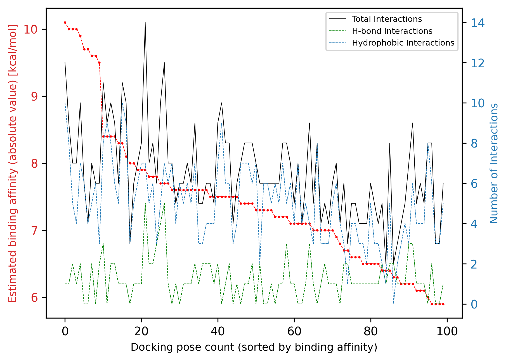
我们可以看到两组数据之间没有明显的相关性；总相互作用数与估计的亲和力之间的相关性很弱。
现在，让我们也分析输入配体的对接姿势中的相互作用，以便进行比较：
[52]:
project1.Ligand.InteractionAnalysis = InteractionAnalysis(
project1.Docking.pdbqt_filepath_extracted_protein,
project1.Docking.pdb_filepath_extracted_protein,
project1.Protein.residue_number_first,
[project1.Ligand],
project1.Ligand.Docking.master_df,
project1.Specs.InteractionAnalysis,
project1.Specs.OutputPaths.ligand,
)
结果可以类似方式查看。例如，查看摘要数据：
[53]:
project1.Ligand.InteractionAnalysis.results.sort_values(
by="total_num_interactions", ascending=False
)
[53]:
| affinity[kcal/mol] | dist from best mode_rmsd_l.b | dist from best mode_rmsd_u.b | drug_score_total | total_num_interactions | h_bond | hydrophobic | salt_bridge | water_bridge | pi_stacking | pi_cation | halogen | metal | ||
|---|---|---|---|---|---|---|---|---|---|---|---|---|---|---|
| CID | mode | |||||||||||||
| 2426 | 5 | -8.4 | 2.002 | 3.534 | 0.7 | 9 | 2 | 7 | 0 | 0 | 0 | 0 | 0 | 0 |
| 1 | -8.7 | 0.000 | 0.000 | 0.7 | 8 | 2 | 6 | 0 | 0 | 0 | 0 | 0 | 0 | |
| 2 | -8.7 | 1.839 | 2.339 | 0.7 | 6 | 2 | 4 | 0 | 0 | 0 | 0 | 0 | 0 | |
| 3 | -8.7 | 3.811 | 5.375 | 0.7 | 5 | 2 | 3 | 0 | 0 | 0 | 0 | 0 | 0 | |
| 4 | -8.7 | 3.340 | 4.918 | 0.7 | 5 | 2 | 3 | 0 | 0 | 0 | 0 | 0 | 0 |
同样，我们看到流程成功找到了对接姿势中相互作用数量高于输入配体的类似物。
视觉交互分析¶
nglview 辅助模块还提供了一个可视化功能 visualize_top_poses_interactions，用于在 Docking 类中显示特定类似物的相互作用：
另外，如果我们有兴趣可视化某个类似物的相互作用，可以使用每个类似物的 visualize_analog_interactions 方法：
注意：在不同配体和对接姿势之间点击切换仅在执行此教程时有效；在静态 HTML 预览中无效。
[54]:
project1.InteractionAnalysis.visualize_all_interactions()

[54]:
查找具有特定相互作用的姿势¶
在分析完所有类似物与其相互作用后，我们可能希望查找展现某些所需相互作用的特定类似物。例如，我们可以搜索：
在结合模式中至少涉及 x 个氢键相互作用的类似物
与蛋白质的特定残基具有相互作用的类似物
实际上，我们可以通过以下辅助函数按特定相互作用类型和最小相互作用数量搜索特定结合模式：
例如，由于铰链区氢键是许多激酶抑制剂中的常见相互作用，我们可以搜索参与这种特定相互作用的配体。此外，我们可以进一步缩小搜索范围，要求至少具有一定数量的氢键相互作用。
[55]:
analog_poses_with_desired_interactions = (
project1.InteractionAnalysis.find_poses_with_specific_interactions(
list_interaction_data=[["h_bond", 793]], all_or_any="any"
)
)
analog_poses_with_desired_interactions
[55]:
[('65997', 2),
('1530', 3),
('11256587', 5),
('62274', 4),
('53462', 2),
('103148', 5)]
使用 visualize_docking_poses_interactions 方法，我们也可以单独可视化结果，而不是在之前的摘要中查看：
[56]:
project1.InteractionAnalysis.visualize_docking_poses_interactions(
list_of_cid_pose_nr_tuples=analog_poses_with_desired_interactions
)

[56]:
选择最佳类似物¶
回顾一下，我们现在有：
一个输入配体的原始类似物库，由 PubChem 相似性搜索提供。
使用 Smina 将选定的类似物对接到了检测到的蛋白质结合位点中。
分析了这些对接姿势中的蛋白质-配体相互作用。
现在，流程中最后一块拼图是根据所有计算出的指标（结合亲和力、蛋白质-配体相互作用数和药物相似性评分）选择最佳类似物。
现在我们导入 OptimizedLigands 类，它接收整个项目，并根据输入规格中指定的条件（例如，结合亲和力阈值、相互作用阈值等）选择最佳类似物。
[57]:
from utils import OptimizedLigands
project1.OptimizedLigands = OptimizedLigands(project=project1)
该类有一个 __call__ 方法，可以打印摘要：
[58]:
project1.OptimizedLigands()
Number of docking poses with higher binding affinity than highest binding affinity of ligand: 10
CIDs of analogs corresponding to these docking poses: [‘11292933’, ‘135398510’]
Number of docking poses with higher number of total interactions than highest interacting pose of ligand: 17
CIDs of analogs corresponding to these docking poses: [‘11256587’, ‘62805’, ‘11292933’, ‘214347’, ‘6451164’, ‘103148’, ‘62275’, ‘65997’, ‘57469’]
Number of docking poses with higher affinity and number of total interactions than best corresponding poses of ligand: 3
CIDs of analogs corresponding to these docking poses: [‘11292933’]
CIDs of analogs with higher binding affinity, number of total interactions and drug-likeness score than ligand: [‘11292933’]
CIDs of selected analogs as final output: [‘11292933’]
Comparison between the input ligand and optimized analog:
| Input Ligand | Optimized Analog | |
|---|---|---|
| Drug-Score | 0.7 | 0.77 |
| Highest Binding Affinity | -8.7 | -10.10 |
| Highest Number of Total Interactions | 9.0 | 12.00 |
我们可以看到流程成功找到了一个在所有三个指标上（即更高的结合亲和力、更多的相互作用数和更高的药物相似性评分）都优于输入配体的类似物。
最后，我们可以简单地可视化找到的最适合的类似物：
[59]:
project1.OptimizedLigands.show_final_output()
| Value | |
|---|---|
| Property | |
![Mol]() |
|
| name | Gsk163090 |
| iupac_name | 1-[3-[2-[4-(2-methylquinolin-5-yl)piperazin-1-... |
| smiles | CC1=NC2=C(C=C1)C(=CC=C2)N3CCN(CC3)CCC4=CC(=CC=... |
| cid | 11292933 |
| inchi | InChI=1S/C25H29N5O/c1-19-8-9-22-23(27-19)6-3-7... |
| inchikey | ANGUXJDGJCHGOG-UHFFFAOYSA-N |
| mol_weight | 415.541 |
| num_H_acceptors | 4 |
| num_H_donors | 1 |
| logp | 3.44 |
| tpsa | 51.71 |
| num_rot_bonds | 5 |
| saturation | 0.36 |
| drug_score_qed | 0.69 |
| drug_score_lipinski | 1.0 |
| drug_score_custom | 0.77 |
| drug_score_total | 0.77 |
| similarity | 0.2 |
| binding_affinity_best | -10.1 |
| binding_affinity_mean | -9.860000000000001 |
| binding_affinity_std | 0.20736441353327736 |
| docking_poses_dist_rmsd_lb_mean | 1.5622 |
| docking_poses_dist_rmsd_lb_std | 0.888192940751051 |
| docking_poses_dist_rmsd_ub_mean | 2.216 |
| docking_poses_dist_rmsd_ub_std | 1.2926940860079774 |
| average_num_total_interactions | 8.4 |
| average_num_h_bond | 1.2 |
| average_num_hydrophobic | 6.8 |
| average_num_salt_bridge | 0.4 |
| average_num_water_bridge | 0.0 |
| average_num_pi_stacking | 0.0 |
| average_num_pi_cation | 0.0 |
| average_num_halogen | 0.0 |
| average_num_metal | 0.0 |
流程的最终输出是包含选定数量的（在输入规格中指定）最具优化特征的类似物的 Ligand 对象。你可以从 OptimizedLigands 类进一步分析和处理它们。
[60]:
project1.OptimizedLigands.output
# NBVAL_CHECK_OUTPUT
[60]:
[<Ligand CID: 11292933>]
整合：全自动化流程¶
既然我们已经分别演示了流程的所有不同部分，我们将引入一个方法 LeadOptimizationPipeline.run 来自动运行整个流程并显示结果。它接受项目名称、输入数据的文件路径和输出路径，并执行所有必要的过程以生成最终输出。它还将打印流程每个部分的中间结果摘要，以便遵循整个过程。
为了进行演示，让我们使用刚刚找到的优化类似物作为输入配体，看看我们是否可以通过另一轮先导优化进一步改进它。
我们首先需要创建相应的输入文件。为此，我们可以简单地打开我们项目的输入文件，修改相关行，然后将修改后的文件保存为新名称。
[61]:
new_input_df = pd.read_csv(project1.Specs.RawData.filepath)
new_input_df.head()
# NBVAL_CHECK_OUTPUT
[61]:
| Subject | Property | Value | Description | |
|---|---|---|---|---|
| 0 | Protein | Input Type* | pdb_code | Allowed: 'pdb_code', 'pdb_filepath'. |
| 1 | Protein | Input Value* | 3W32 | Either a valid PDB-code or a local filepath to... |
| 2 | Ligand | Input Type* | smiles | Allowed: 'smiles', 'cid', 'inchi', 'inchikey',... |
| 3 | Ligand | Input Value* | Nc1cc2ncnc(Nc3cccc(Br)c3)c2cc1N | Identifier value corresponding to given input ... |
| 4 | Binding Site | Definition Method | detection | Definition method for the protein binding site... |
[62]:
new_input_df.loc[3, "Value"] = project1.OptimizedLigands.output[0].smiles
new_input_df.head()
# NBVAL_CHECK_OUTPUT
[62]:
| Subject | Property | Value | Description | |
|---|---|---|---|---|
| 0 | Protein | Input Type* | pdb_code | Allowed: 'pdb_code', 'pdb_filepath'. |
| 1 | Protein | Input Value* | 3W32 | Either a valid PDB-code or a local filepath to... |
| 2 | Ligand | Input Type* | smiles | Allowed: 'smiles', 'cid', 'inchi', 'inchikey',... |
| 3 | Ligand | Input Value* | CC1=NC2=C(C=C1)C(=CC=C2)N3CCN(CC3)CCC4=CC(=CC=... | Identifier value corresponding to given input ... |
| 4 | Binding Site | Definition Method | detection | Definition method for the protein binding site... |
[63]:
new_input_df.to_csv(DATA / "PipelineInputData_Project2.csv")
现在让我们再次运行流程，这次是全自动的，并使用已经优化过的配体作为输入。除了项目名称和输入/输出路径之外，我们还需要提供 FrozenData 类的实例，以确保使用正确的数据集。最后，我们调用 run 方法：
[64]:
project2 = LeadOptimizationPipeline.run(
project_name="Project2_EGFR_CID11292933",
input_data_filepath=DATA / "PipelineInputData_Project2.csv",
output_data_root_folder_path=DATA / "Outputs",
frozen_data_filepath=frozen_data_project2.pipeline,
)
Initializing Project: Successful
Project name: Project2_EGFR_CID11292933
Initializing Input/Output: Successful
Input data read from: /Users/sakhawathsumit/Documents/teachopencadd/teachopencadd/talktorials/T018_automated_cadd_pipeline/data/PipelineInputData_Project2.csv
Output folders created at: /Users/sakhawathsumit/Documents/teachopencadd/teachopencadd/talktorials/T018_automated_cadd_pipeline/data/Outputs/Project2_EGFR_CID11292933
Sending GET request to https://files.rcsb.org/download/3W32.pdb to fetch 3W32's pdb file as a string.
Processing Protein: Successful
Structure Title: EGFR KINASE DOMAIN COMPLEXED WITH COMPOUND 20A
Name: EPIDERMAL GROWTH FACTOR RECEPTOR
Chains: [‘A’]
Ligands: [[‘W32’, ‘A1101’, 39], [‘SO4’, ‘A1102’, 5]]
First Residue Number: 701
Last Residue Number: 1017
Number of Residues: 317
Sending GET request to https://files.rcsb.org/download/3W32.pdb to fetch 3W32's pdb file as a string.
Processing Ligand: Successful
| Value | |
|---|---|
| Property | |
|
|
| name | Gsk163090 |
| iupac_name | 1-[3-[2-[4-(2-methylquinolin-5-yl)piperazin-1-... |
| smiles | CC1=NC2=C(C=C1)C(=CC=C2)N3CCN(CC3)CCC4=CC(=CC=... |
| cid | 11292933 |
| inchi | InChI=1S/C25H29N5O/c1-19-8-9-22-23(27-19)6-3-7... |
| inchikey | ANGUXJDGJCHGOG-UHFFFAOYSA-N |
| mol_weight | 415.541 |
| num_H_acceptors | 4 |
| num_H_donors | 1 |
| logp | 3.44 |
| tpsa | 51.71 |
| num_rot_bonds | 5 |
| saturation | 0.36 |
| drug_score_qed | 0.69 |
| drug_score_lipinski | 1.0 |
| drug_score_custom | 0.77 |
| drug_score_total | 0.77 |
Binding Site Detection: Successful
Binding site definition method: DETECTION
Binding site detection method: DOGSITESCORER
Selection method for best binding site: SORTING
Selection criteria for best binding site: [‘lig_cov’, ‘poc_cov’]
Name of selected binding site: P_0_0
Binding site coordinates - center: [15.91, 32.33, 11.03]
Binding site coordinates - size: [24.84, 24.84, 24.84]
[14:36:50] DEPRECATION WARNING: please use MorganGenerator
[14:36:50] DEPRECATION WARNING: please use MorganGenerator
[14:36:50] DEPRECATION WARNING: please use MorganGenerator
[14:36:50] DEPRECATION WARNING: please use MorganGenerator
[14:36:50] DEPRECATION WARNING: please use MorganGenerator
[14:36:50] DEPRECATION WARNING: please use MorganGenerator
[14:36:50] DEPRECATION WARNING: please use MorganGenerator
[14:36:50] DEPRECATION WARNING: please use MorganGenerator
[14:36:50] DEPRECATION WARNING: please use MorganGenerator
[14:36:50] DEPRECATION WARNING: please use MorganGenerator
[14:36:50] DEPRECATION WARNING: please use MorganGenerator
[14:36:50] DEPRECATION WARNING: please use MorganGenerator
[14:36:50] DEPRECATION WARNING: please use MorganGenerator
[14:36:50] DEPRECATION WARNING: please use MorganGenerator
[14:36:50] DEPRECATION WARNING: please use MorganGenerator
[14:36:50] DEPRECATION WARNING: please use MorganGenerator
[14:36:50] DEPRECATION WARNING: please use MorganGenerator
[14:36:50] DEPRECATION WARNING: please use MorganGenerator
[14:36:50] DEPRECATION WARNING: please use MorganGenerator
[14:36:50] DEPRECATION WARNING: please use MorganGenerator
[14:36:50] DEPRECATION WARNING: please use MorganGenerator
[14:36:50] DEPRECATION WARNING: please use MorganGenerator
[14:36:50] DEPRECATION WARNING: please use MorganGenerator
[14:36:50] DEPRECATION WARNING: please use MorganGenerator
[14:36:50] DEPRECATION WARNING: please use MorganGenerator
[14:36:50] DEPRECATION WARNING: please use MorganGenerator
[14:36:50] DEPRECATION WARNING: please use MorganGenerator
[14:36:50] DEPRECATION WARNING: please use MorganGenerator
[14:36:50] DEPRECATION WARNING: please use MorganGenerator
[14:36:50] DEPRECATION WARNING: please use MorganGenerator
[14:36:50] DEPRECATION WARNING: please use MorganGenerator
[14:36:50] DEPRECATION WARNING: please use MorganGenerator
[14:36:50] DEPRECATION WARNING: please use MorganGenerator
[14:36:50] DEPRECATION WARNING: please use MorganGenerator
[14:36:50] DEPRECATION WARNING: please use MorganGenerator
[14:36:50] DEPRECATION WARNING: please use MorganGenerator
[14:36:50] DEPRECATION WARNING: please use MorganGenerator
[14:36:50] DEPRECATION WARNING: please use MorganGenerator
[14:36:50] DEPRECATION WARNING: please use MorganGenerator
[14:36:50] DEPRECATION WARNING: please use MorganGenerator
[14:36:50] DEPRECATION WARNING: please use MorganGenerator
[14:36:50] DEPRECATION WARNING: please use MorganGenerator
[14:36:50] DEPRECATION WARNING: please use MorganGenerator
[14:36:50] DEPRECATION WARNING: please use MorganGenerator
[14:36:50] DEPRECATION WARNING: please use MorganGenerator
[14:36:50] DEPRECATION WARNING: please use MorganGenerator
[14:36:50] DEPRECATION WARNING: please use MorganGenerator
[14:36:50] DEPRECATION WARNING: please use MorganGenerator
[14:36:50] DEPRECATION WARNING: please use MorganGenerator
[14:36:50] DEPRECATION WARNING: please use MorganGenerator
[14:36:50] DEPRECATION WARNING: please use MorganGenerator
[14:36:50] DEPRECATION WARNING: please use MorganGenerator
[14:36:50] DEPRECATION WARNING: please use MorganGenerator
[14:36:50] DEPRECATION WARNING: please use MorganGenerator
[14:36:50] DEPRECATION WARNING: please use MorganGenerator
[14:36:50] DEPRECATION WARNING: please use MorganGenerator
[14:36:50] DEPRECATION WARNING: please use MorganGenerator
[14:36:50] DEPRECATION WARNING: please use MorganGenerator
[14:36:50] DEPRECATION WARNING: please use MorganGenerator
[14:36:50] DEPRECATION WARNING: please use MorganGenerator
[14:36:53] DEPRECATION WARNING: please use MorganGenerator
[14:36:53] DEPRECATION WARNING: please use MorganGenerator
[14:36:55] DEPRECATION WARNING: please use MorganGenerator
[14:36:55] DEPRECATION WARNING: please use MorganGenerator
[14:36:58] DEPRECATION WARNING: please use MorganGenerator
[14:36:58] DEPRECATION WARNING: please use MorganGenerator
[14:37:01] DEPRECATION WARNING: please use MorganGenerator
[14:37:01] DEPRECATION WARNING: please use MorganGenerator
[14:37:03] DEPRECATION WARNING: please use MorganGenerator
[14:37:03] DEPRECATION WARNING: please use MorganGenerator
[14:37:06] DEPRECATION WARNING: please use MorganGenerator
[14:37:06] DEPRECATION WARNING: please use MorganGenerator
[14:37:09] DEPRECATION WARNING: please use MorganGenerator
[14:37:09] DEPRECATION WARNING: please use MorganGenerator
[14:37:11] DEPRECATION WARNING: please use MorganGenerator
[14:37:11] DEPRECATION WARNING: please use MorganGenerator
[14:37:14] DEPRECATION WARNING: please use MorganGenerator
[14:37:14] DEPRECATION WARNING: please use MorganGenerator
[14:37:18] DEPRECATION WARNING: please use MorganGenerator
[14:37:18] DEPRECATION WARNING: please use MorganGenerator
[14:37:21] DEPRECATION WARNING: please use MorganGenerator
[14:37:21] DEPRECATION WARNING: please use MorganGenerator
[14:37:23] DEPRECATION WARNING: please use MorganGenerator
[14:37:23] DEPRECATION WARNING: please use MorganGenerator
[14:37:26] DEPRECATION WARNING: please use MorganGenerator
[14:37:26] DEPRECATION WARNING: please use MorganGenerator
[14:37:28] DEPRECATION WARNING: please use MorganGenerator
[14:37:28] DEPRECATION WARNING: please use MorganGenerator
[14:37:31] DEPRECATION WARNING: please use MorganGenerator
[14:37:31] DEPRECATION WARNING: please use MorganGenerator
[14:37:34] DEPRECATION WARNING: please use MorganGenerator
[14:37:34] DEPRECATION WARNING: please use MorganGenerator
[14:37:36] DEPRECATION WARNING: please use MorganGenerator
[14:37:36] DEPRECATION WARNING: please use MorganGenerator
[14:37:39] DEPRECATION WARNING: please use MorganGenerator
[14:37:39] DEPRECATION WARNING: please use MorganGenerator
[14:37:42] DEPRECATION WARNING: please use MorganGenerator
[14:37:42] DEPRECATION WARNING: please use MorganGenerator
[14:37:45] DEPRECATION WARNING: please use MorganGenerator
[14:37:45] DEPRECATION WARNING: please use MorganGenerator
Ligand Similarity Search: Successful
Search engine: PUBCHEM
Number of fetched analogs with a similarity higher than 70%: 30
Dice-similarity range of fetched analogs: 0.14 - 0.39
CID of analog with the highest Dice-similarity: 60149
Number of selected drug-like analogs: 20
Range of drug-likeness score in selected analogs: 0.71 - 0.92
CID of analog with the highest drug-likeness score: 5761
Docking Experiment: Successful
Highest binding affinity of input ligand: -10.2
Binding affinity range of analogs: -6.3 - -10.8
Number of analog docking poses with higher affinity than ligand: 2
Number of analogs with higher affinity than ligand: 2
CIDs of analogs with higher affinity than ligand: {‘28693’, ‘60149’}
Docking modes
(CID - mode)
Protein-Ligand Interaction Analysis: Successful
Highest number of total interactions in a docking pose of input ligand: 13
Range of total number of interactions in docking poses of analogs: 3 - 13
Correlation plot between binding affinity and number of interactions in docking poses of analogs:
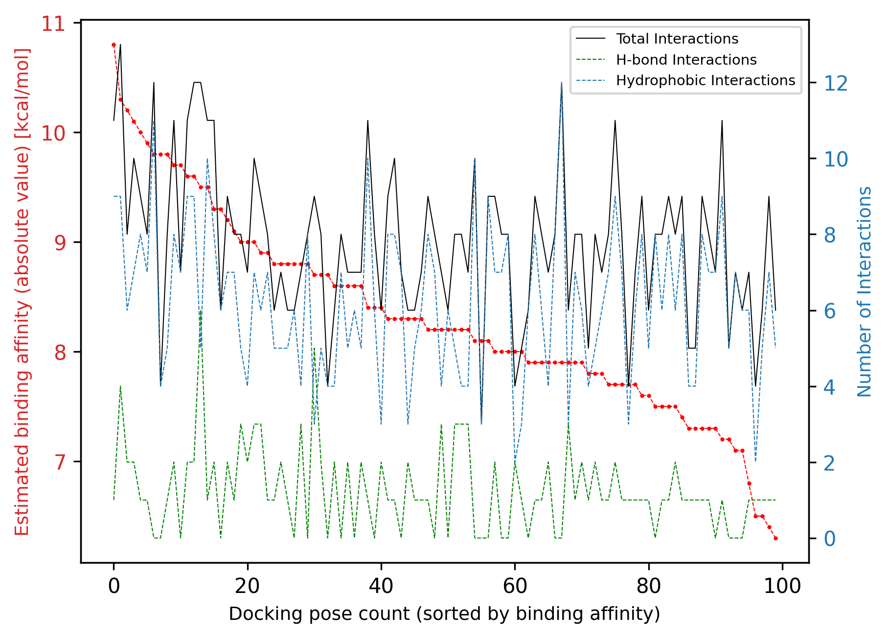

Selecting The Optimized Analog: Successful
Number of docking poses with higher binding affinity than highest binding affinity of ligand: 3
CIDs of analogs corresponding to these docking poses: [‘28693’, ‘60149’]
Number of docking poses with higher number of total interactions than highest interacting pose of ligand: 1
CIDs of analogs corresponding to these docking poses: [‘60149’]
Number of docking poses with higher affinity and number of total interactions than best corresponding poses of ligand: 1
CIDs of analogs corresponding to these docking poses: [‘60149’]
CIDs of analogs with higher binding affinity, number of total interactions and drug-likeness score than ligand: []
CIDs of selected analogs as final output: [‘28693’]
Comparison between the input ligand and optimized analog:
| Input Ligand | Optimized Analog | |
|---|---|---|
| Drug-Score | 0.77 | 0.78 |
| Highest Binding Affinity | -10.20 | -10.80 |
| Highest Number of Total Interactions | 13.00 | 12.00 |
Selected analogs as final output:
| Value | |
|---|---|
| Property | |
![Mol]() |
|
| name | Metergoline |
| iupac_name | benzyl N-[[(6aR,9S,10aR)-4,7-dimethyl-6,6a,8,9... |
| smiles | CN1CC(CC2C1CC3=CN(C4=CC=CC2=C34)C)CNC(=O)OCC5=... |
| cid | 28693 |
| inchi | InChI=1S/C25H29N3O2/c1-27-14-18(13-26-25(29)30... |
| inchikey | WZHJKEUHNJHDLS-QTGUNEKASA-N |
| mol_weight | 403.526 |
| num_H_acceptors | 4 |
| num_H_donors | 1 |
| logp | 4.06 |
| tpsa | 46.5 |
| num_rot_bonds | 4 |
| saturation | 0.4 |
| drug_score_qed | 0.71 |
| drug_score_lipinski | 1.0 |
| drug_score_custom | 0.78 |
| drug_score_total | 0.78 |
| similarity | 0.23 |
| binding_affinity_best | -10.8 |
| binding_affinity_mean | -10.079999999999998 |
| binding_affinity_std | 0.42071367935925263 |
| docking_poses_dist_rmsd_lb_mean | 2.086 |
| docking_poses_dist_rmsd_lb_std | 1.4826484748584203 |
| docking_poses_dist_rmsd_ub_mean | 4.6972000000000005 |
| docking_poses_dist_rmsd_ub_std | 4.087722006203456 |
| average_num_total_interactions | 9.0 |
| average_num_h_bond | 0.8 |
| average_num_hydrophobic | 7.6 |
| average_num_salt_bridge | 0.6 |
| average_num_water_bridge | 0.0 |
| average_num_pi_stacking | 0.0 |
| average_num_pi_cation | 0.0 |
| average_num_halogen | 0.0 |
| average_num_metal | 0.0 |

Pipeline Completed: Successful
如您所见，该流程再次成功为 project1 的优化类似物找到了一个类似物（CID: 28693），并且类似物的总相互作用数进一步改善（输入：12，类似物：17），同时结合亲和力保持相似。
尽管如此，我们仍然可以查看具有比输入配体更高的亲和力和更多的相互作用数的类似物：
[65]:
project2.OptimizedLigands.higher_affinity_and_interacting_analogs
[65]:
[<Ligand CID: 60149>]
[66]:
project2.OptimizedLigands.higher_affinity_and_interacting_analogs[0]()
[66]:
| Value | |
|---|---|
| Property | |
![Mol]() |
|
| name | Sertindole |
| iupac_name | 1-[2-[4-[5-chloro-1-(4-fluorophenyl)indol-3-yl... |
| smiles | C1CN(CCC1C2=CN(C3=C2C=C(C=C3)Cl)C4=CC=C(C=C4)F... |
| cid | 60149 |
| inchi | InChI=1S/C24H26ClFN4O/c25-18-1-6-23-21(15-18)2... |
| inchikey | GZKLJWGUPQBVJQ-UHFFFAOYSA-N |
| mol_weight | 440.95 |
| num_H_acceptors | 3 |
| num_H_donors | 1 |
| logp | 4.63 |
| tpsa | 40.51 |
| num_rot_bonds | 5 |
| saturation | 0.38 |
| drug_score_qed | 0.63 |
| drug_score_lipinski | 1.0 |
| drug_score_custom | 0.71 |
| drug_score_total | 0.72 |
| similarity | 0.39 |
| binding_affinity_best | -10.3 |
| binding_affinity_mean | -9.74 |
| binding_affinity_std | 0.5319774431308155 |
| docking_poses_dist_rmsd_lb_mean | 2.5082 |
| docking_poses_dist_rmsd_lb_std | 1.7358681401535083 |
| docking_poses_dist_rmsd_ub_mean | 4.157 |
| docking_poses_dist_rmsd_ub_std | 3.1173451846082103 |
| average_num_total_interactions | 8.6 |
| average_num_h_bond | 1.6 |
| average_num_hydrophobic | 6.6 |
| average_num_salt_bridge | 0.2 |
| average_num_water_bridge | 0.0 |
| average_num_pi_stacking | 0.0 |
| average_num_pi_cation | 0.2 |
| average_num_halogen | 0.0 |
| average_num_metal | 0.0 |
就像 project1 一样，流程的最终输出也可以直接作为 Ligand 对象访问：
[67]:
project2.OptimizedLigands.output
# NBVAL_CHECK_OUTPUT
[67]:
[<Ligand CID: 28693>]
讨论¶
单击此处了解流程架构和步骤的更详细摘要。
作为输入，流程接受一个 CSV 文件，该文件为流程的不同步骤指定蛋白质结构、配体和各种其他项目特定的设置，例如选择最佳结合口袋的标准、查找和选择类似物的标准，以及对接规范或要寻找的所需蛋白质-配体相互作用。
代码被划分为八个主干类——每个类负责流程中的一个特定任务（图 8）——如下所示：
Specs**：读取并处理输入数据，以便在流程中进一步使用，并创建输出路径来存储整个过程中生成的所有数据。Protein**：使用输入的蛋白质数据创建一个Protein对象，该对象以属性形式提供关于蛋白质的扩展信息，以及各种操作、分析和可视化蛋白质数据的方法。Ligand**：从输入的配体数据创建一个Ligand对象，包含扩展的属性和方法，类似于Protein类。BindingSiteDetection**：使用 ProteinsPlus 网络服务器的 DoGSiteScorer 功能检测结合位点，并为流程的其余部分提供选定的结合位点。LigandSimilaritySearch**：使用 PubChem 网络服务和自定义子结构指纹，从输入配体生成类似物，并选择最具药物相似性的类似物用于下一步。Docking**：将选定的类似物对接到检测到的蛋白质结合位点中，并过滤出最佳对接姿势。InteractionAnalysis**：分析所有类似物与蛋白质之间的蛋白质-配体相互作用。OptimizedLigands**：分析所有类似物的计算指标，并根据在输入规格文件中定义的标准选择最佳类似物。
我们首先以逐步的方式展示了这个流程，使用 EGFR（PDB 代码：3W32）作为靶标蛋白，以及具有 ChEMBL 化合物 ID 的有希望的抑制剂 CHEMBL328216（图 9）。根据输入规格执行所有必要的步骤后，流程能够推荐所提供的配体的一个类似物，该类似物在估计的结合亲和力（-10.2 vs -8.8 kcal/mol）、蛋白质-配体相互作用数（11 vs 8）和计算的药物相似性（77% vs 70%）方面具有改善的特征。
随后，我们还展示了该流程全自动运行的能力。为此，我们尝试使用 run 方法重新优化第一步中找到的最佳类似物。这个过程的结果是，该流程再次成功找到了具有更好特征的类似物。
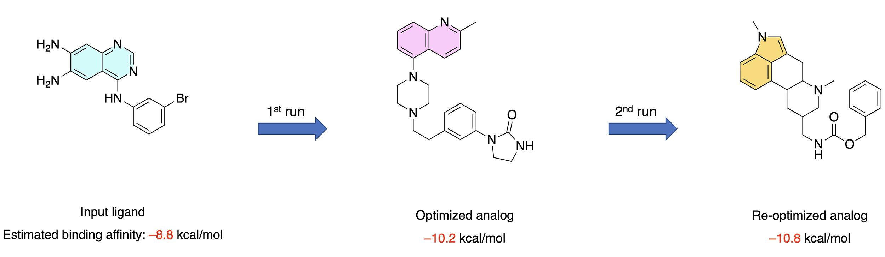
图 9：自动化先导优化流程的输入和输出。将 project1 的输入（蓝色）和输出类似物（黄色）并排显示。与输出类似物的 3D 结合模式（右侧）一起，可以看到流程成功找到了一个具有更高的估计结合亲和力（通过对接评分测量）、更多的蛋白质-配体相互作用（通过 PLIP 评分测量）以及更高的药物相似性（通过 QED 药物相似性评分测量）的类似物。
然而，默认情况下，流程的结果并非完全确定性的。这是由于流程与不断更新的在线数据库（即用于配体相似性搜索的 PubChem 数据库）的交互，以及具有不可避免的随机化成分的计算（即使用 OpenBabel 包）。因此，为了保持本教程结果的稳定性，我们通过冻结上述步骤的输出来避免这个问题。当然，这可以通过修改变量 USE_FROZEN_DATASETS 轻松地撤销，以便您可以轻松地将该流程用于您自己的项目。
该流程的代码以易于理解、维护和扩展的方式特别构建。对于每个主干类，都通过 Specs 中定义的标准在步骤之间检查输入数据和中间数据的完整性。此外，通过创建类作为流程的模块化组件，很容易仅更改一个类而不影响其他类的功能，只要它们共享相同的接口。
总而言之，本教程旨在为您提供一个自动化先导优化流程，该流程不仅可用于常规使用，而且可以轻松理解、修改和扩展到您自己的药物发现项目中。
测验¶
概念性问题：
本教程中使用的流程包括哪些步骤？
为什么使用结合的（结晶）配体定义结合位点是一个好的做法？
描述流程中为找到最佳类似物而执行的搜索策略。
存在哪些限制会影响该流程的最终输出？你能想到一种方法来解决或最小化这些限制吗？
实践任务：
调整输入 CSV 文件中的输入参数（位于数据文件夹中的
InputData_Template）。尝试选择另一个靶标蛋白（例如另一类激酶）和配体。如果一切顺利，流水线应以类似的方式运行。通读整个自动流程，尝试理解代码在实际操作中的作用。在一些步骤，你还可以取消冻结数据集（
USE_FROZEN_DATASETS = False），看看实时查询 PubChem 和 DoGSiteScorer 网络服务以及运行 Smina 对接计算的效果。深入了解
utils/helpers文件夹中辅助模块的代码，尝试扩展流程的功能（例如添加新的相互作用类型、使用不同的结合位点选择方法等）。
补充信息¶
在每个辅助模块的以下演示中，请记住，实际流程中使用的是主干类，而不是这些辅助函数。尽管如此，本补充信息旨在让您更深入地了解辅助模块的功能，以供感兴趣或有需要时参考。
io 辅助模块演示¶
该模块包含处理输入和输出数据（如 CSV 文件、文件夹等）的基本必要功能。其主要用途是管道的 Specs 类。
[68]:
from utils import Consts
from utils.helpers import io
输入 CSV 文件可以通过 create_dataframe_from_csv_input_file 函数轻松导入为 Pandas DataFrame：
注意：虽然我们可以明确使用列的原始名称（即 "Subject"、"Property" 和 "Value"）来输入数据，但流程代码使用 Consts 枚举。这使我们能够将列名称抽象化，以便如果将来列名发生变化，只需要在一个地方修改。
[69]:
example_input_df = io.create_dataframe_from_csv_input_file(
input_data_filepath=DATA / f"PipelineInputData_Project1.csv",
list_of_index_column_names=[
Consts.DataFrame.ColumnNames.SUBJECT.value,
Consts.DataFrame.ColumnNames.PROPERTY.value,
],
list_of_columns_to_keep=[Consts.DataFrame.ColumnNames.VALUE.value],
)
example_input_df
[69]:
| Value | ||
|---|---|---|
| Subject | Property | |
| Protein | Input Type* | pdb_code |
| Input Value* | 3W32 | |
| Ligand | Input Type* | smiles |
| Input Value* | Nc1cc2ncnc(Nc3cccc(Br)c3)c2cc1N | |
| Binding Site | Definition Method | detection |
| Coordinates | NaN | |
| Ligand | NaN | |
| Detection Method | dogsitescorer | |
| Protein Chain-ID | NaN | |
| Protein Ligand-ID | NaN | |
| Selection Method | sorting | |
| Selection Criteria | lig_cov, poc_cov | |
| Ligand Similarity Search | Search Engine | pubchem |
| Minumum Similarity [%] | 70 | |
| Maximum Number of Results | 30 | |
| Maximum Number of Most Drug-Like Analogs to Continue With | 20 | |
| Docking | Program | smina |
| Number of Docking Poses per Ligand | 5 | |
| Exhaustiveness | 10 | |
| Random Seed | 1111 | |
| Interaction Analysis | Program | plip |
| Optimized Ligand | Number of Results | 1 |
| Selection Method | sorting | |
| Selection Criteria | affinity, total_num_interactions, drug_score_t... |
此外，我们还可以使用 copy_series_from_dataframe 函数提取与特定 Subject 对应的所有数据：
[70]:
example_input_protein_data = io.copy_series_from_dataframe(
input_df=example_input_df,
index_name=Consts.DataFrame.SubjectNames.BINDING_SITE.value,
column_name=Consts.DataFrame.ColumnNames.VALUE.value,
)
example_input_protein_data
[70]:
Property
Definition Method detection
Coordinates NaN
Ligand NaN
Detection Method dogsitescorer
Protein Chain-ID NaN
Protein Ligand-ID NaN
Selection Method sorting
Selection Criteria lig_cov, poc_cov
Name: Value, dtype: object
为了存储输出数据，我们还需要 create_folder 函数，该函数可以创建一个文件夹（及其所有必要的父目录），前提是该文件夹尚不存在。
[71]:
example_output_path = io.create_folder(folder_name="Examples", folder_path=DATA / "Outputs")
example_output_path
[71]:
PosixPath('/Users/sakhawathsumit/Documents/teachopencadd/teachopencadd/talktorials/T018_automated_cadd_pipeline/data/Outputs/Examples')
pdb 辅助模块演示¶
该模块包含处理蛋白质数据和 PDB 文件所需的功能，例如下载 PDB 文件、读取和提取有用数据以及提取特定分子。它是使用 pypdb 和 biopandas 包创建的，主要供管道的 Protein 和 Docking 类使用。
[72]:
from utils.helpers import pdb
我们可以使用 fetch_and_save_pdb_file 函数通过 PDB 代码下载蛋白质的 PDB 文件。该函数还返回 PDB 文件的内容，以便在后续单元格中使用。
[73]:
example_downloaded_protein_filepath = pdb.fetch_and_save_pdb_file(
pdb_code="3w32", output_filepath=example_output_path / "3W32"
)
example_downloaded_protein_filepath
Sending GET request to https://files.rcsb.org/download/3w32.pdb to fetch 3w32's pdb file as a string.
[73]:
PosixPath('/Users/sakhawathsumit/Documents/teachopencadd/teachopencadd/talktorials/T018_automated_cadd_pipeline/data/Outputs/Examples/3W32.pdb')
[74]:
example_pdb_file_content_1 = pdb.read_pdb_file_content(
input_type="pdb_filepath", input_value=example_downloaded_protein_filepath
)
example_pdb_file_content_1[:800]
[74]:
'HEADER TRANSFERASE/TRANSFERASE INHIBITOR 07-DEC-12 3W32 \nTITLE EGFR KINASE DOMAIN COMPLEXED WITH COMPOUND 20A \nCOMPND MOL_ID: 1; \nCOMPND 2 MOLECULE: EPIDERMAL GROWTH FACTOR RECEPTOR; \nCOMPND 3 CHAIN: A; \nCOMPND 4 FRAGMENT: KINASE DOMAIN, UNP RESIDUES 696-1022; \nCOMPND 5 SYNONYM: PROTO-ONCOGENE C-ERBB-1, RECEPTOR TYROSINE-PROTEIN KINASE \nCOMPND 6 ERBB-1; \nCOMPND 7 EC: 2.7.10.1; \nCOMPND 8 ENGINEERED: YES '
请注意，我们也可以将参数 input_type 设置为 "pdb_code" 并输入有效的 PDB 代码作为 input_value：
[75]:
example_pdb_file_content_2 = pdb.read_pdb_file_content(input_type="pdb_code", input_value="3w32")
example_pdb_file_content_2[:800]
Sending GET request to https://files.rcsb.org/download/3w32.pdb to fetch 3w32's pdb file as a string.
[75]:
'HEADER TRANSFERASE/TRANSFERASE INHIBITOR 07-DEC-12 3W32 \nTITLE EGFR KINASE DOMAIN COMPLEXED WITH COMPOUND 20A \nCOMPND MOL_ID: 1; \nCOMPND 2 MOLECULE: EPIDERMAL GROWTH FACTOR RECEPTOR; \nCOMPND 3 CHAIN: A; \nCOMPND 4 FRAGMENT: KINASE DOMAIN, UNP RESIDUES 696-1022; \nCOMPND 5 SYNONYM: PROTO-ONCOGENE C-ERBB-1, RECEPTOR TYROSINE-PROTEIN KINASE \nCOMPND 6 ERBB-1; \nCOMPND 7 EC: 2.7.10.1; \nCOMPND 8 ENGINEERED: YES '
然后，PDB 文件内容可借助 pdb_file_as_dataframe 函数提取有关蛋白质的一些有用信息：
[76]:
example_pdb_info_1 = pdb.extract_info_from_pdb_file_content(
pdb_file_text_content=example_pdb_file_content_1
)
example_pdb_info_1
[76]:
{'Structure Title': 'EGFR KINASE DOMAIN COMPLEXED WITH COMPOUND 20A',
'Name': 'EPIDERMAL GROWTH FACTOR RECEPTOR',
'Chains': ['A'],
'Ligands': [['W32', 'A1101', 39], ['SO4', 'A1102', 5]]}
提供的数据包括：蛋白质名称、来源生物的学名、分类学信息、沉积日期、解析方法、分辨率、蛋白质序列以及来自 PDB 文件的其他各种元数据。
另一个不存储 PDB 文件内容的示例（使用另一个 PDB 代码）：
[77]:
example_pdb_info_2 = pdb.extract_info_from_pdb_file_content(
pdb_file_text_content=pdb.read_pdb_file_content(input_type="pdb_code", input_value="5gty")
)
example_pdb_info_2
Sending GET request to https://files.rcsb.org/download/5gty.pdb to fetch 5gty's pdb file as a string.
[77]:
{'Structure Title': 'CRYSTAL STRUCTURE OF EGFR 696-1022 T790M IN COMPLEX WITH LXX-6-26',
'Name': 'EPIDERMAL GROWTH FACTOR RECEPTOR',
'Chains': ['A'],
'Ligands': [['816', 'A1101', 36],
['816', 'B1101', 36],
['816', 'D1101', 36],
['816', 'E1101', 36],
['816', 'F1101', 36],
['816', 'G1101', 36],
['EDO', 'G1102', 4],
['816', 'H1101', 36],
['EDO', 'H1102', 4],
['EDO', 'H1103', 4],
['EDO', 'H1104', 4],
['816', 'C1101', 36]]}
load_pdb_file_as_dataframe 函数还可以用于访问关于 PDB 文件的一系列更详细的数据，例如 ATOM 和 HETATM 坐标。返回的数据框包含通常可以在 PDB 文件中找到的所有列：
[78]:
example_pdb_dataframe = pdb.load_pdb_file_as_dataframe(
pdb_file_text_content=example_pdb_file_content_1
)
example_pdb_dataframe.keys()
[78]:
dict_keys(['ATOM', 'HETATM', 'ANISOU', 'OTHERS'])
例如，有关蛋白质中原子的所有信息可以通过 ATOM 键访问。这些数据被用于管道的 Protein 和 BindingSiteDetection 类。
[79]:
example_pdb_dataframe["ATOM"].head()
[79]:
| record_name | atom_number | blank_1 | atom_name | alt_loc | residue_name | blank_2 | chain_id | residue_number | insertion | ... | x_coord | y_coord | z_coord | occupancy | b_factor | blank_4 | segment_id | element_symbol | charge | line_idx | |
|---|---|---|---|---|---|---|---|---|---|---|---|---|---|---|---|---|---|---|---|---|---|
| 0 | ATOM | 1 | N | GLN | A | 701 | ... | -0.023 | 33.326 | -4.411 | 1.0 | 47.95 | N | NaN | 426 | ||||||
| 1 | ATOM | 2 | CA | GLN | A | 701 | ... | -0.291 | 31.978 | -3.835 | 1.0 | 50.95 | C | NaN | 428 | ||||||
| 2 | ATOM | 3 | C | GLN | A | 701 | ... | 0.946 | 31.062 | -3.957 | 1.0 | 47.20 | C | NaN | 430 | ||||||
| 3 | ATOM | 4 | O | GLN | A | 701 | ... | 0.876 | 29.863 | -3.659 | 1.0 | 47.25 | O | NaN | 432 | ||||||
| 4 | ATOM | 5 | CB | GLN | A | 701 | ... | -1.501 | 31.341 | -4.517 | 1.0 | 64.85 | C | NaN | 434 |
5 rows × 21 columns
最后，我们可以使用 extract_molecule_from_pdb_file 函数从多条目 PDB 文件中提取特定分子，例如包含蛋白质-配体复合物的文件。这将从 opencadd 包返回一个 MDAnalysis.core.groups.AtomGroup 对象，但更重要的是，该函数还会将提取的分子保存到给定路径的新 PDB 文件中。稍后我们需要提取蛋白质的 PDB 文件来执行对接计算。
要从 PDB 文件中提取蛋白质，我们将参数 molecule_name 设置为 "protein"，并提供文件路径：
[80]:
example_extracted_protein = pdb.extract_molecule_from_pdb_file(
molecule_name="protein",
input_filepath=example_downloaded_protein_filepath,
output_filepath=example_output_path / "extracted_protein.pdb",
)
example_extracted_protein
[80]:
<AtomGroup with 2545 atoms>
或者，要提取某个配体，我们必须提供其 ID（在此结构中，共结晶配体及其 ID 的 HETNAM 为 03P）：
[81]:
example_extracted_ligand = pdb.extract_molecule_from_pdb_file(
molecule_name="W32",
input_filepath=example_downloaded_protein_filepath,
output_filepath=example_output_path / "extracted_ligand.pdb",
)
example_extracted_ligand
[81]:
<AtomGroup with 39 atoms>
pubchem 辅助模块演示¶
该模块使我们能够通过 PUG-REST API 服务与 PubChem 数据库通信。它可以用于获取关于配体的信息，例如标识符（IUPAC 名称、SMILES、CID）、物理化学性质、文本描述等。这些功能用于管道的 Ligand 类中。此外，它还允许我们对给定配体进行相似性搜索，该功能在 LigandSimilaritySearch 类中使用。
[82]:
from utils.helpers import pubchem
convert_compound_identifier 函数可用于通过提供另一种标识符来获取特定化合物的标识符（例如，通过输入其 SMILES 获取其 CID，反之亦然）：
[83]:
pubchem.convert_compound_identifier(
input_id_type="name", input_id_value="gefitinib", output_id_type="smiles"
)
[83]:
'COC1=C(C=C2C(=C1)N=CN=C2NC3=CC(=C(C=C3)F)Cl)OCCCN4CCOCC4'
或检索其 IUPAC 名称：
[84]:
pubchem.convert_compound_identifier(
input_id_type="name", input_id_value="gefitinib", output_id_type="iupac_name"
)
[84]:
'N-(3-chloro-4-fluorophenyl)-7-methoxy-6-(3-morpholin-4-ylpropoxy)quinazolin-4-amine'
或通过 SMILES 检索其名称：
[85]:
pubchem.convert_compound_identifier(
input_id_type="smiles",
input_id_value="COC1=C(C=C2C(=C1)N=CN=C2NC3=CC(=C(C=C3)F)Cl)OCCCN4CCOCC4",
output_id_type="name",
)
[85]:
'Gefitinib'
或通过名称检索其 CID：
[86]:
pubchem.convert_compound_identifier(
input_id_type="name", input_id_value="gefitinib", output_id_type="cid"
)
[86]:
'123631'
使用 get_compound_record 函数，该分子的所有可用记录都将以字典形式返回：
[87]:
example_compound_records = pubchem.get_compound_record(
input_id_type="name", input_id_value="gefitinib"
)
字典中的可用键及对应的值是：
[88]:
example_compound_records.keys()
[88]:
dict_keys(['id', 'atoms', 'bonds', 'coords', 'charge', 'props', 'count'])
作为示例，我们访问 props 键（仅显示前 3 个条目）：
[89]:
example_compound_records["props"][:3]
[89]:
[{'urn': {'label': 'Compound',
'name': 'Canonicalized',
'datatype': 5,
'release': '2025.09.15'},
'value': {'ival': 1}},
{'urn': {'label': 'Compound Complexity',
'datatype': 7,
'implementation': 'E_COMPLEXITY',
'version': '3.4.8.24',
'software': 'Cactvs',
'source': 'Xemistry GmbH',
'release': '2025.09.15'},
'value': {'fval': 545}},
{'urn': {'label': 'Count',
'name': 'Hydrogen Bond Acceptor',
'datatype': 5,
'implementation': 'E_NHACCEPTORS',
'version': '3.4.8.24',
'software': 'Cactvs',
'source': 'Xemistry GmbH',
'release': '2025.09.15'},
'value': {'ival': 8}}]
get_description_from_smiles 函数提供化合物的文本描述。但是，该函数并非对所有分子都可用：
[90]:
pubchem.get_description_from_smiles(
smiles="COC1=C(C=C2C(=C1)N=CN=C2NC3=CC(=C(C=C3)F)Cl)OCCCN4CCOCC4", printout=True
)
Name: Gefitinib
CID: 123631
Gefitinib is a member of the class of quinazolines that is quinazoline which is substituted by a (3-chloro-4-fluorophenyl)nitrilo group, 3-(morpholin-4-yl)propoxy group and a methoxy group at positions 4,6 and 7, respectively. An EGFR kinase inhibitor used for the treatment of non-small cell lung cancer. It has a role as an antineoplastic agent and an epidermal growth factor receptor antagonist. It is an aromatic ether, a member of quinazolines, a member of morpholines, a secondary amino compound, a tertiary amino compound, a member of monochlorobenzenes and a member of monofluorobenzenes.
Source: ChEBI, https://www.ebi.ac.uk/chebi/searchId.do?chebiId=CHEBI:49668
similarity_search 函数通过提供化合物的 SMILES 对其执行相似性搜索。min_similarity 参数表示与输入结构的相似性阈值，并被传递给 PubChem API。max_responses 参数指定要返回的最大结果数（即与我们的查询最相似的化合物）。
[91]:
example_analogs = pubchem.similarity_search(
smiles="COC1=C(C=C2C(=C1)N=CN=C2NC3=CC(=C(C=C3)F)Cl)OCCCN4CCOCC4",
min_similarity=70,
max_num_results=5,
)
example_analogs
[91]:
[{'CID': 4680,
'ConnectivitySMILES': 'COC1=C(C=C(C=C1)CC2=NC=CC3=CC(=C(C=C32)OC)OC)OC'},
{'CID': 2092,
'ConnectivitySMILES': 'CN(CCCNC(=O)C1CCCO1)C2=NC3=CC(=C(C=C3C(=N2)N)OC)OC'},
{'CID': 2247,
'ConnectivitySMILES': 'COC1=CC=C(C=C1)CCN2CCC(CC2)NC3=NC4=CC=CC=C4N3CC5=CC=C(C=C5)F'},
{'CID': 68546,
'ConnectivitySMILES': 'COC1=C(C=C2C(=C1)C(=NC(=N2)N3CCN(CC3)C(=O)C4=CC=CO4)N)OC.Cl'},
{'CID': 176870,
'ConnectivitySMILES': 'COCCOC1=C(C=C2C(=C1)C(=NC=N2)NC3=CC=CC(=C3)C#C)OCCOC'}]
例如，我们也可以获取它们的名称：
[92]:
for analog in example_analogs:
analog["Name"] = pubchem.convert_compound_identifier(
input_id_type="smiles",
input_id_value=analog["ConnectivitySMILES"], # analog["CanonicalSMILES"]
output_id_type="name",
)
example_analogs
[92]:
[{'CID': 4680,
'ConnectivitySMILES': 'COC1=C(C=C(C=C1)CC2=NC=CC3=CC(=C(C=C32)OC)OC)OC',
'Name': 'Papaverine'},
{'CID': 2092,
'ConnectivitySMILES': 'CN(CCCNC(=O)C1CCCO1)C2=NC3=CC(=C(C=C3C(=N2)N)OC)OC',
'Name': 'Alfuzosin'},
{'CID': 2247,
'ConnectivitySMILES': 'COC1=CC=C(C=C1)CCN2CCC(CC2)NC3=NC4=CC=CC=C4N3CC5=CC=C(C=C5)F',
'Name': 'Astemizole'},
{'CID': 68546,
'ConnectivitySMILES': 'COC1=C(C=C2C(=C1)C(=NC(=N2)N3CCN(CC3)C(=O)C4=CC=CO4)N)OC.Cl',
'Name': 'Prazosin Hydrochloride'},
{'CID': 176870,
'ConnectivitySMILES': 'COCCOC1=C(C=C2C(=C1)C(=NC=N2)NC3=CC=CC(=C3)C#C)OCCOC',
'Name': 'Erlotinib'}]
rdkit 辅助模块演示¶
该模块包含处理分子（如生成分子对象、计算描述符、执行格式转换等）所需的功能。这些功能被用于管道的 Ligand 和 LigandSimilaritySearch 类中。
[93]:
from utils.helpers import rdkit
要使用 rdkit 模块中的任何其他函数，我们首先需要使用 create_molecule_object 函数从 SMILES 字符串生成一个 rdkit.Chem.rdchem.Mol 分子对象：
[94]:
example_mol_obj = rdkit.create_molecule_object(
input_type="smiles",
input_value="COC1=C(C=C2C(=C1)N=CN=C2NC3=CC(=C(C=C3)F)Cl)OCCCN4CCOCC4",
)
type(example_mol_obj)
[94]:
rdkit.Chem.rdchem.Mol
可以之间调用 rdkit.Chem.rdchem.Mol 对象，它会简单地可视化该分子：
[95]:
example_mol_obj
[95]:
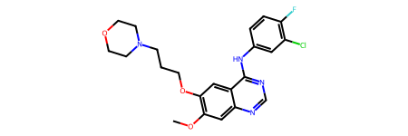
该对象本身有多个可用的方法和属性；例如，我们现在可以获得分子的原子数和分子量：
[96]:
example_mol_obj.GetNumAtoms()
[96]:
31
或它的 SMILES：
[97]:
example_mol_obj.smiles
[97]:
'COc1cc2ncnc(Nc3ccc(F)c(Cl)c3)c2cc1OCCCN1CCOCC1'
我们可以使用 save_molecule_image_to_file 函数将化合物的图像保存为 PNG 文件：
[98]:
rdkit.save_molecule_image_to_file(
mol_obj=example_mol_obj, filepath=example_output_path / "gefitinib"
)
如果我们有一组要一起可视化的分子，还可以使用 draw_molecules 函数，该函数接收一个 rdkit.Chem.rdchem.Mol 对象列表和一个可选的标签列表作为输入。
为了演示该函数，让我们先为刚刚从 PubChem 相似性搜索中获取的吉非替尼类似物创建 rdkit.Chem.rdchem.Mol 对象：
[99]:
# create rdkit.Chem.rdchem.Mol objects from SMILES
# using the create_molecule_object function:
for compound in example_analogs:
compound["MolObj"] = rdkit.create_molecule_object(
input_type="smiles", input_value=compound["ConnectivitySMILES"]
)
example_analogs
[99]:
[{'CID': 4680,
'ConnectivitySMILES': 'COC1=C(C=C(C=C1)CC2=NC=CC3=CC(=C(C=C32)OC)OC)OC',
'Name': 'Papaverine',
'MolObj': <rdkit.Chem.rdchem.Mol at 0x124e87290>},
{'CID': 2092,
'ConnectivitySMILES': 'CN(CCCNC(=O)C1CCCO1)C2=NC3=CC(=C(C=C3C(=N2)N)OC)OC',
'Name': 'Alfuzosin',
'MolObj': <rdkit.Chem.rdchem.Mol at 0x124e84200>},
{'CID': 2247,
'ConnectivitySMILES': 'COC1=CC=C(C=C1)CCN2CCC(CC2)NC3=NC4=CC=CC=C4N3CC5=CC=C(C=C5)F',
'Name': 'Astemizole',
'MolObj': <rdkit.Chem.rdchem.Mol at 0x124e87300>},
{'CID': 68546,
'ConnectivitySMILES': 'COC1=C(C=C2C(=C1)C(=NC(=N2)N3CCN(CC3)C(=O)C4=CC=CO4)N)OC.Cl',
'Name': 'Prazosin Hydrochloride',
'MolObj': <rdkit.Chem.rdchem.Mol at 0x124e860a0>},
{'CID': 176870,
'ConnectivitySMILES': 'COCCOC1=C(C=C2C(=C1)C(=NC=N2)NC3=CC=CC(=C3)C#C)OCCOC',
'Name': 'Erlotinib',
'MolObj': <rdkit.Chem.rdchem.Mol at 0x124e855b0>}]
现在，我们可以在一张图中可视化这些化合物及其对应的名称（注意我们还为图像提供了一个标题）：
[100]:
rdkit.draw_molecules(
list_mol_objs=[compound["MolObj"] for compound in example_analogs],
list_legends=[compound["Name"] for compound in example_analogs],
mols_per_row=5,
sub_img_size=(300, 300),
filepath=example_output_path / "analogs",
)
[100]:
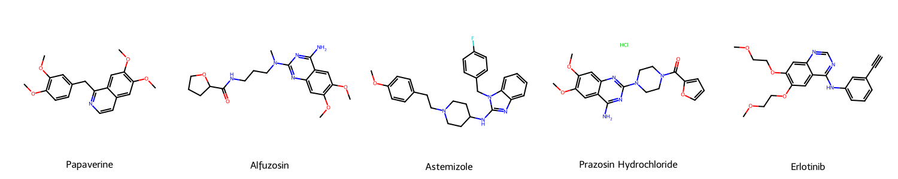
calculate_similarity_dice 函数可用于使用 RDKit 中的 MACCS 指纹计算两个配体之间的 Dice 相似性度量：
[101]:
for compound in example_analogs:
print(
compound["Name"],
rdkit.calculate_similarity_dice(mol_obj1=example_mol_obj, mol_obj2=compound["MolObj"]),
)
Papaverine 0.34
Alfuzosin 0.35
Astemizole 0.32
Prazosin Hydrochloride 0.35
Erlotinib 0.57
[14:45:37] DEPRECATION WARNING: please use MorganGenerator
[14:45:37] DEPRECATION WARNING: please use MorganGenerator
[14:45:37] DEPRECATION WARNING: please use MorganGenerator
[14:45:37] DEPRECATION WARNING: please use MorganGenerator
[14:45:37] DEPRECATION WARNING: please use MorganGenerator
[14:45:37] DEPRECATION WARNING: please use MorganGenerator
[14:45:37] DEPRECATION WARNING: please use MorganGenerator
[14:45:37] DEPRECATION WARNING: please use MorganGenerator
[14:45:37] DEPRECATION WARNING: please use MorganGenerator
[14:45:37] DEPRECATION WARNING: please use MorganGenerator
请注意，我们在 PubChem 中查询了与吉非替尼至少具有 70% 相似性的化合物。然而，当我们计算相似性时，发现它们大多远低于 70%。原因是 PubChem 使用与我们这里所做的不同的相似性度量和度量，即自定义子结构指纹和 Tanimoto 相似性度量。
即使我们稍微更改生成 Morgan 指纹的设置，我们也会得到不同的结果：
[102]:
for compound in example_analogs:
print(
compound["Name"],
rdkit.calculate_similarity_dice(
mol_obj1=example_mol_obj,
mol_obj2=compound["MolObj"],
morgan_radius=3,
morgan_nbits=2048,
),
)
Papaverine 0.28
Alfuzosin 0.28
Astemizole 0.27
Prazosin Hydrochloride 0.29
Erlotinib 0.52
[14:45:37] DEPRECATION WARNING: please use MorganGenerator
[14:45:37] DEPRECATION WARNING: please use MorganGenerator
[14:45:37] DEPRECATION WARNING: please use MorganGenerator
[14:45:37] DEPRECATION WARNING: please use MorganGenerator
[14:45:37] DEPRECATION WARNING: please use MorganGenerator
[14:45:37] DEPRECATION WARNING: please use MorganGenerator
[14:45:37] DEPRECATION WARNING: please use MorganGenerator
[14:45:37] DEPRECATION WARNING: please use MorganGenerator
[14:45:37] DEPRECATION WARNING: please use MorganGenerator
[14:45:37] DEPRECATION WARNING: please use MorganGenerator
我们的 rdkit 模块还提供了一个 calculate_druglikeness 函数，可用于获取多种分子性质以及四个药物相似性评分：
drug_score_lipinski：基于 Lipinski 的五规则，归一化为 1（即 4 = 1、3 = 0.75、2 = 0.5、1 = 0.25、0 = 0）。drug_score_custom：通过拟合适合 G. Bickerton et al., Nat. Chem 2012, 4(2), 90-98. 实验数据的函数来计算药物相似性（QED）的定量估计。drug_score_qed：使用默认参数由 RDKit 计算的 QED。drug_score_total：上述三个评分的加权平均值，比例为 3:2:1。
[103]:
rdkit.calculate_druglikeness(mol_obj=example_mol_obj)
[103]:
{'mol_weight': 446.91,
'num_H_acceptors': 7,
'num_H_donors': 1,
'logp': 4.28,
'tpsa': 68.74,
'num_rot_bonds': 8,
'saturation': 0.36,
'drug_score_qed': 0.52,
'drug_score_lipinski': 1.0,
'drug_score_custom': np.float64(0.56),
'drug_score_total': np.float64(0.61)}
最后，我们可以使用 save_3D_molecule_to_SDfile 函数，该函数为对接计算准备分子，即生成并保存化合物的 3D 构象到一个 SDF 文件中，并根据需要添加氢原子。
[104]:
rdkit.save_3D_molecule_to_SDfile(
mol_obj=example_mol_obj, filepath=example_output_path / "gefitinib"
)
dogsitescorer 辅助模块演示¶
该模块实现了 ProteinsPlus 网络服务器 的 DoGSiteScorer 功能的 API。它可以用于提交蛋白质结合位点检测作业并处理结果，以选择靶标蛋白中合适的结合位点。这里的函数用于管道的 BindingSiteDetection 类。
[105]:
from utils.helpers import dogsitescorer
要提交结合位点检测作业，我们可以使用 submit_job 函数，提供有效的 PDB 代码即可。
[106]:
example_binding_site_data = dogsitescorer.submit_job(
pdb_id="3W32",
ligand_id="W32_A_1101",
chain_id="A",
)
example_binding_site_data
[106]:
| lig_cov | poc_cov | lig_name | volume | enclosure | surface | depth | surf/vol | lid/hull | ellVol | ... | PRO | SER | THR | TRP | TYR | VAL | simpleScore | drugScore | pdb_file_url | ccp4_file_url | |
|---|---|---|---|---|---|---|---|---|---|---|---|---|---|---|---|---|---|---|---|---|---|
| name | |||||||||||||||||||||
| P_0 | 85.48 | 31.22 | W32_A_1101 | 1422.66 | 0.10 | 1673.75 | 19.26 | 1.176493 | - | - | ... | 3 | 1 | 2 | 1 | 1 | 5 | 0.63 | 0.810023 | https://proteins.plus/results/dogsite/fvaKtdhv... | https://proteins.plus/results/dogsite/fvaKtdhv... |
| P_0_0 | 85.48 | 73.90 | W32_A_1101 | 599.23 | 0.06 | 540.06 | 17.51 | 0.901257 | - | - | ... | 1 | 0 | 2 | 0 | 0 | 2 | 0.59 | 0.620201 | https://proteins.plus/results/dogsite/fvaKtdhv... | https://proteins.plus/results/dogsite/fvaKtdhv... |
| P_0_1 | 3.23 | 0.44 | W32_A_1101 | 201.73 | 0.08 | 381.07 | 11.36 | 1.889010 | - | - | ... | 0 | 0 | 1 | 0 | 0 | 1 | 0.17 | 0.174816 | https://proteins.plus/results/dogsite/fvaKtdhv... | https://proteins.plus/results/dogsite/fvaKtdhv... |
| P_0_2 | 0.00 | 0.00 | W32_A_1101 | 185.60 | 0.17 | 282.00 | 9.35 | 1.519397 | - | - | ... | 0 | 0 | 0 | 0 | 0 | 2 | 0.13 | 0.195695 | https://proteins.plus/results/dogsite/fvaKtdhv... | https://proteins.plus/results/dogsite/fvaKtdhv... |
| P_0_3 | 6.45 | 0.29 | W32_A_1101 | 175.30 | 0.15 | 297.42 | 9.29 | 1.696634 | - | - | ... | 1 | 1 | 0 | 0 | 0 | 1 | 0.13 | 0.168845 | https://proteins.plus/results/dogsite/fvaKtdhv... | https://proteins.plus/results/dogsite/fvaKtdhv... |
| P_0_4 | 0.00 | 0.00 | W32_A_1101 | 170.37 | 0.08 | 390.10 | 11.99 | 2.289722 | - | - | ... | 0 | 0 | 0 | 1 | 1 | 0 | 0.15 | 0.223742 | https://proteins.plus/results/dogsite/fvaKtdhv... | https://proteins.plus/results/dogsite/fvaKtdhv... |
| P_0_5 | 0.00 | 0.00 | W32_A_1101 | 90.43 | 0.24 | 177.50 | 6.24 | 1.962844 | - | - | ... | 1 | 0 | 0 | 0 | 0 | 2 | 0.00 | 0.165232 | https://proteins.plus/results/dogsite/fvaKtdhv... | https://proteins.plus/results/dogsite/fvaKtdhv... |
| P_1 | 0.00 | 0.00 | W32_A_1101 | 708.99 | 0.13 | 1030.19 | 14.32 | 1.453039 | - | - | ... | 1 | 2 | 2 | 0 | 1 | 1 | 0.46 | 0.755915 | https://proteins.plus/results/dogsite/fvaKtdhv... | https://proteins.plus/results/dogsite/fvaKtdhv... |
| P_1_0 | 0.00 | 0.00 | W32_A_1101 | 496.90 | 0.11 | 739.17 | 12.72 | 1.487563 | - | - | ... | 1 | 2 | 2 | 0 | 1 | 1 | 0.49 | 0.465489 | https://proteins.plus/results/dogsite/fvaKtdhv... | https://proteins.plus/results/dogsite/fvaKtdhv... |
| P_1_1 | 0.00 | 0.00 | W32_A_1101 | 212.10 | 0.16 | 454.31 | 11.03 | 2.141961 | - | - | ... | 0 | 0 | 0 | 0 | 1 | 0 | 0.19 | 0.242990 | https://proteins.plus/results/dogsite/fvaKtdhv... | https://proteins.plus/results/dogsite/fvaKtdhv... |
| P_2 | 0.00 | 0.00 | W32_A_1101 | 286.21 | 0.18 | 462.29 | 11.83 | 1.615213 | - | - | ... | 2 | 0 | 1 | 0 | 1 | 3 | 0.09 | 0.537137 | https://proteins.plus/results/dogsite/fvaKtdhv... | https://proteins.plus/results/dogsite/fvaKtdhv... |
| P_2_0 | 0.00 | 0.00 | W32_A_1101 | 148.16 | 0.15 | 271.11 | 10.75 | 1.829846 | - | - | ... | 2 | 0 | 0 | 0 | 1 | 2 | 0.06 | 0.278636 | https://proteins.plus/results/dogsite/fvaKtdhv... | https://proteins.plus/results/dogsite/fvaKtdhv... |
| P_2_1 | 0.00 | 0.00 | W32_A_1101 | 138.05 | 0.20 | 320.52 | 7.29 | 2.321767 | - | - | ... | 1 | 0 | 1 | 0 | 0 | 1 | 0.05 | 0.244429 | https://proteins.plus/results/dogsite/fvaKtdhv... | https://proteins.plus/results/dogsite/fvaKtdhv... |
| P_3 | 0.00 | 0.00 | W32_A_1101 | 244.16 | 0.04 | 514.94 | 14.34 | 2.109027 | - | - | ... | 3 | 2 | 1 | 0 | 1 | 1 | 0.12 | 0.572013 | https://proteins.plus/results/dogsite/fvaKtdhv... | https://proteins.plus/results/dogsite/fvaKtdhv... |
| P_4 | 0.00 | 0.00 | W32_A_1101 | 169.28 | 0.21 | 373.47 | 11.49 | 2.206226 | - | - | ... | 2 | 0 | 1 | 0 | 0 | 0 | 0.07 | 0.424397 | https://proteins.plus/results/dogsite/fvaKtdhv... | https://proteins.plus/results/dogsite/fvaKtdhv... |
| P_4_0 | 0.00 | 0.00 | W32_A_1101 | 108.35 | 0.22 | 237.70 | 7.50 | 2.193816 | - | - | ... | 0 | 0 | 0 | 0 | 0 | 0 | 0.02 | 0.355261 | https://proteins.plus/results/dogsite/fvaKtdhv... | https://proteins.plus/results/dogsite/fvaKtdhv... |
| P_4_1 | 0.00 | 0.00 | W32_A_1101 | 60.93 | 0.20 | 193.96 | 5.80 | 3.183325 | - | - | ... | 2 | 0 | 1 | 0 | 0 | 0 | 0.00 | 0.570708 | https://proteins.plus/results/dogsite/fvaKtdhv... | https://proteins.plus/results/dogsite/fvaKtdhv... |
| P_5 | 0.00 | 0.00 | W32_A_1101 | 166.59 | 0.16 | 347.46 | 11.99 | 2.085719 | - | - | ... | 1 | 1 | 0 | 0 | 1 | 0 | 0.00 | 0.401384 | https://proteins.plus/results/dogsite/fvaKtdhv... | https://proteins.plus/results/dogsite/fvaKtdhv... |
| P_6 | 0.00 | 0.00 | W32_A_1101 | 155.14 | 0.00 | 146.79 | 11.39 | 0.946178 | - | - | ... | 1 | 3 | 1 | 2 | 1 | 2 | 0.00 | 0.399009 | https://proteins.plus/results/dogsite/fvaKtdhv... | https://proteins.plus/results/dogsite/fvaKtdhv... |
| P_7 | 0.00 | 0.00 | W32_A_1101 | 116.03 | 0.27 | 227.72 | 8.04 | 1.962596 | - | - | ... | 1 | 0 | 0 | 1 | 1 | 0 | 0.00 | 0.224937 | https://proteins.plus/results/dogsite/fvaKtdhv... | https://proteins.plus/results/dogsite/fvaKtdhv... |
| P_8 | 0.00 | 0.00 | W32_A_1101 | 105.98 | 0.23 | 206.04 | 10.16 | 1.944140 | - | - | ... | 2 | 0 | 0 | 1 | 1 | 0 | 0.00 | 0.308046 | https://proteins.plus/results/dogsite/fvaKtdhv... | https://proteins.plus/results/dogsite/fvaKtdhv... |
| P_9 | 0.00 | 0.00 | W32_A_1101 | 104.32 | 0.09 | 202.13 | 9.20 | 1.937596 | - | - | ... | 0 | 1 | 0 | 0 | 1 | 1 | 0.00 | 0.267262 | https://proteins.plus/results/dogsite/fvaKtdhv... | https://proteins.plus/results/dogsite/fvaKtdhv... |
22 rows × 51 columns
请注意，submit_job 函数也可以接受链 ID 以将检测限制到特定链，以及一个列表参数，用于定义一个或多个特定的配体标识符，以指导结合位点的选择。
尽管如此，它遵循以下格式：(配体-ID)_(链-ID)_(配体-残基-ID)。在实现 BindingSiteDetection 类时，我们使用与输入 PDB 文件中第一个非溶剂（即蛋白质或配体）配体对应的口袋。
如果我们想从本地 PDB 文件检测蛋白质的结合位点，我们应首先将文件上传到 DoGSiteScorer 网络服务器。upload_pdb_file 函数就是这样做的：
[107]:
# NBVAL_SKIP
example_dummy_pdb_id = dogsitescorer.upload_pdb_file(filepath=example_downloaded_protein_filepath)
example_dummy_pdb_id
[107]:
'3w32pdbf1458ec7-364d-4616-b560-8f4211db271e'
[108]:
# NBVAL_SKIP
dogsitescorer.submit_job(pdb_id=example_dummy_pdb_id, ligand_id="W32_A_1101", chain_id="A").head()
[108]:
| lig_cov | poc_cov | lig_name | volume | enclosure | surface | depth | surf/vol | lid/hull | ellVol | ... | PRO | SER | THR | TRP | TYR | VAL | simpleScore | drugScore | pdb_file_url | ccp4_file_url | |
|---|---|---|---|---|---|---|---|---|---|---|---|---|---|---|---|---|---|---|---|---|---|
| name | |||||||||||||||||||||
| P_0 | 85.48 | 31.22 | W32_A_1101 | 1422.66 | 0.10 | 1673.75 | 19.26 | 1.176493 | - | - | ... | 3 | 1 | 2 | 1 | 1 | 5 | 0.63 | 0.810023 | https://proteins.plus/results/dogsite/WB8aXgzh... | https://proteins.plus/results/dogsite/WB8aXgzh... |
| P_0_0 | 85.48 | 73.90 | W32_A_1101 | 599.23 | 0.06 | 540.06 | 17.51 | 0.901257 | - | - | ... | 1 | 0 | 2 | 0 | 0 | 2 | 0.59 | 0.620201 | https://proteins.plus/results/dogsite/WB8aXgzh... | https://proteins.plus/results/dogsite/WB8aXgzh... |
| P_0_1 | 3.23 | 0.44 | W32_A_1101 | 201.73 | 0.08 | 381.07 | 11.36 | 1.889010 | - | - | ... | 0 | 0 | 1 | 0 | 0 | 1 | 0.17 | 0.174816 | https://proteins.plus/results/dogsite/WB8aXgzh... | https://proteins.plus/results/dogsite/WB8aXgzh... |
| P_0_2 | 0.00 | 0.00 | W32_A_1101 | 185.60 | 0.17 | 282.00 | 9.35 | 1.519397 | - | - | ... | 0 | 0 | 0 | 0 | 0 | 2 | 0.13 | 0.195695 | https://proteins.plus/results/dogsite/WB8aXgzh... | https://proteins.plus/results/dogsite/WB8aXgzh... |
| P_0_3 | 6.45 | 0.29 | W32_A_1101 | 175.30 | 0.15 | 297.42 | 9.29 | 1.696634 | - | - | ... | 1 | 1 | 0 | 0 | 0 | 1 | 0.13 | 0.168845 | https://proteins.plus/results/dogsite/WB8aXgzh... | https://proteins.plus/results/dogsite/WB8aXgzh... |
5 rows × 51 columns
submit_job 函数返回一个包含所有检测到的结合口袋及其各自特性的 DataFrame：
volume：口袋体积surface：口袋表面积depth：口袋深度drugScore：结合位点的药物评分simpleScore：结合位点的简单评分enclosure：封闭度lig_cov：配体覆盖度poc_cov：口袋覆盖度druggability：可药性分类
这些值可用于选择最佳的结合位点。
[109]:
example_binding_site_data.columns
[109]:
Index(['lig_cov', 'poc_cov', 'lig_name', 'volume', 'enclosure', 'surface',
'depth', 'surf/vol', 'lid/hull', 'ellVol', 'ell c/a', 'ell b/a',
'siteAtms', 'accept', 'donor', 'hydrophobic_interactions',
'hydrophobicity', 'metal', 'Cs', 'Ns', 'Os', 'Ss', 'Xs', 'negAA',
'posAA', 'polarAA', 'apolarAA', 'ALA', 'ARG', 'ASN', 'ASP', 'CYS',
'GLN', 'GLU', 'GLY', 'HIS', 'ILE', 'LEU', 'LYS', 'MET', 'PHE', 'PRO',
'SER', 'THR', 'TRP', 'TYR', 'VAL', 'simpleScore', 'drugScore',
'pdb_file_url', 'ccp4_file_url'],
dtype='object')
根据项目的具体情况，这些值可用于选择最合适的检测到的结合位点。然而，为简单起见，我们可以使用 select_best_binding_site_by_expression 函数，该函数根据提供的 Python 表达式选择结合位点。例如，表达式 "poc_cov > 0.5" 将选择 poc_cov 分数高于 0.5 的口袋。如果指定了多个口袋，则返回第一个。expression 参数可以包含任何有效的 pandas 表达式，以及任何适当的 Python 逻辑运算符。例如，"poc_cov > 0.5 and lig_cov > 0.5"。
[110]:
example_best_pocket_name = dogsitescorer.select_best_pocket(
binding_site_df=example_binding_site_data,
selection_method="sorting",
selection_criteria=["lig_cov", "poc_cov"],
ascending=False,
)
example_best_pocket_name
[110]:
'P_0_0'
另一种选择结合位点的方法是提供任何能生成类列表对象的有效 Python 表达式（通过 unsafe_eval 参数）。例如，"poc_cov" 返回按 poc_cov 排序的口袋。这使用 pd.DataFrame.eval 或 pd.DataFrame.query。
例如，使用这种方法，我们可以对结合位点 DataFrame 中的属性执行任何计算。我们可以定义一个函数，计算数据中每个口袋的综合指标，并按该指标进行排序。
[111]:
dogsitescorer.select_best_pocket(
binding_site_df=example_binding_site_data,
selection_method="function",
selection_criteria="((df['lig_cov'] + df['poc_cov']) / 2) * ((df['drugScore'] + df['simpleScore']) / 2) / df['volume']",
ascending=False,
)
[111]:
'P_0_0'
例如，上面的 selection_criteria 是一个计算 lig_cov 和 poc_cov 的平均值，并加上 drugScore 和 simpleScore 的加权值的函数。然后，选择分数最高的口袋。
另一个例子是：
[112]:
dogsitescorer.select_best_pocket(
binding_site_df=example_binding_site_data,
selection_method="function",
selection_criteria="df[['drugScore', 'simpleScore']].min(axis=1) * df[['poc_cov', 'lig_cov']].max(axis=1)",
ascending=False,
)
[112]:
'P_0'
上面的例子计算了 drugScore 和 simpleScore 之间的最小值，并将结果与 volume 相乘。在这种情况下，选择了分数最低的口袋。你可以使用任何pandas库中可用的函数（例如 np.mean、np.median、np.sum、np.min、np.max 等）。
[113]:
dogsitescorer.save_binding_sites_to_file(
binding_site_df=example_binding_site_data, output_path=example_output_path
)
下载了必要的结合位点文件后，我们现在可以通过提供结合位点的 PDB 文件路径和结合位点的 centroid 半径来计算所选口袋的坐标。calculate_pocket_coords 函数返回选定口袋的 xyz 坐标和大小：
[114]:
dogsitescorer.calculate_pocket_coordinates_from_pocket_pdb_file(
filepath=example_output_path / example_best_pocket_name
)
[114]:
{'center': [15.91, 32.33, 11.03], 'size': [24.84, 24.84, 24.84]}
最后，我们还可以通过提供口袋的下载 PDB 文件路径给 get_residues_in_pocket 函数来查看某个口袋包含哪些残基：
[115]:
dogsitescorer.get_pocket_residues(
pocket_pdb_filepath=example_output_path / example_best_pocket_name
)
[115]:
| residue_number | residue_name | |
|---|---|---|
| 1 | 718 | LEU |
| 2 | 726 | VAL |
| 3 | 743 | ALA |
| 4 | 744 | ILE |
| 5 | 745 | LYS |
| 6 | 766 | MET |
| 7 | 769 | VAL |
| 8 | 775 | CYS |
| 9 | 776 | ARG |
| 10 | 777 | LEU |
| 11 | 788 | LEU |
| 12 | 789 | ILE |
| 13 | 790 | THR |
| 14 | 791 | GLN |
| 15 | 792 | LEU |
| 16 | 793 | MET |
| 17 | 794 | PRO |
| 18 | 796 | GLY |
| 19 | 797 | CYS |
| 20 | 841 | ARG |
| 21 | 842 | ASN |
| 22 | 844 | LEU |
| 23 | 854 | THR |
| 24 | 855 | ASP |
| 25 | 856 | PHE |
| 26 | 857 | GLY |
| 27 | 858 | LEU |
| 28 | 997 | PHE |
| 29 | 1001 | LEU |
obabel 辅助模块演示¶
在这里，您将找到准备蛋白质和配体类似物进行对接所需的功能，例如通过添加缺失的氢原子、根据给定的 pH 值定义质子化状态、确定部分电荷、生成配体的低能构象以及将其坐标保存为 PDBQT 文件。这些都是在 OpenBabel 和 Pybel 模块的帮助下实现的。
该辅助模块还提供拆分多结构文件或将多个文件合并为多结构文件的功能。这些功能对于后续处理对接输出文件很有用，用于管道的 Docking 和 InteractionAnalysis 类。
[116]:
from utils.helpers import obabel
optimize_structure_for_docking 函数可用于准备对接的结构。它接受一个 openbabel.pybel.Molecule 对象，并根据指定的参数向结构中添加氢原子，根据给定的 pH 值纠正每个原子的质子化状态，计算部分电荷，并生成一个优化的 3D 构象。
然而，除非您希望使用自己的 openbabel.pybel.Molecule 对象，否则没有必须直接使用此函数，因为它也在 create_pdbqt_from_smiles 和 create_pdbqt_from_pdb_file 函数中实现。
让我们从 SMILES 为吉非替尼创建一个 PDBQT 文件：
[117]:
obabel.create_pdbqt_from_smiles(
smiles="COC1=C(C=C2C(=C1)N=CN=C2NC3=CC(=C(C=C3)F)Cl)OCCCN4CCOCC4",
pdbqt_path=example_output_path / "gefitinib",
)
以及我们提取的蛋白质的 PDBQT 文件：
[118]:
obabel.create_pdbqt_from_pdb_file(
pdb_filepath=example_output_path / "extracted_protein.pdb",
pdbqt_filepath=example_output_path / "extracted_protein.pdbqt",
)
该模块中的其他功能包括 split_multistructure_file，它允许您将多结构文件（例如，包含多个从对接中获得的配体构象的 SDF 文件）拆分为多个单结构文件。merge_multistructure_files 函数则执行相反的操作。
smina 辅助模块演示¶
该模块包含使用 Smina 执行对接所需的函数。它是管道的 Docking 类的主要组件。
[119]:
from utils.helpers import smina
为了将配体对接（dock）到蛋白质的指定口袋中，我们可以使用 dock 函数。为此，我们必须提供：
配体路径：配体 PDBQT 文件的路径。
蛋白质路径：蛋白质 PDBQT 文件的路径。
结合位点：结合位点的中心 xyz 坐标和盒子大小。
可选参数：对接姿势数量（
num_poses）、搜索的详尽性（exhaustiveness）、对接得分阈值等。
对于吉非替尼，对接结果如下所示：
[120]:
example_smina_output = smina.dock(
ligand_path=example_output_path / "gefitinib.pdbqt",
protein_path=example_output_path / "extracted_protein.pdbqt",
pocket_center=[15.91, 32.33, 11.03],
pocket_size=[24.84, 24.84, 24.84],
output_path=example_output_path / "docking",
output_format="pdbqt",
num_poses=5,
exhaustiveness=10,
random_seed=1111,
log=True,
)
example_smina_output
[120]:
' _______ _______ _________ _ _______ \n ( ____ \\( )\\__ __/( ( /|( ___ )\n | ( \\/| () () | ) ( | \\ ( || ( ) |\n | (_____ | || || | | | | \\ | || (___) |\n (_____ )| |(_)| | | | | (\\ \\) || ___ |\n ) || | | | | | | | \\ || ( ) |\n /\\____) || ) ( |___) (___| ) \\ || ) ( |\n \\_______)|/ \\|\\_______/|/ )_)|/ \\|\n\n\nsmina is based off AutoDock Vina. Please cite appropriately.\n\nWeights Terms\n-0.035579 gauss(o=0,_w=0.5,_c=8)\n-0.005156 gauss(o=3,_w=2,_c=8)\n0.840245 repulsion(o=0,_c=8)\n-0.035069 hydrophobic(g=0.5,_b=1.5,_c=8)\n-0.587439 non_dir_h_bond(g=-0.7,_b=0,_c=8)\n1.923 num_tors_div\n\nUsing random seed: 1111\n\n0% 10 20 30 40 50 60 70 80 90 100%\n|----|----|----|----|----|----|----|----|----|----|\n***************************************************\n\nmode | affinity | dist from best mode\n | (kcal/mol) | rmsd l.b.| rmsd u.b.\n-----+------------+----------+----------\n1 -8.9 0.000 0.000 \n2 -8.8 2.144 5.515 \n3 -8.7 1.892 4.945 \n4 -8.6 4.715 8.268 \n5 -8.5 2.661 6.196 \nRefine time 29.295\nLoop time 34.171\n'
为了更好地分析和处理对接结果，我们可以使用 convert_log_to_dataframe 函数将 Smina 日志文件生成为一个 Pandas DataFrame：
[121]:
example_docking_df = smina.convert_log_to_dataframe(example_smina_output)
example_docking_df
[121]:
| affinity[kcal/mol] | dist from best mode_rmsd_l.b | dist from best mode_rmsd_u.b | |
|---|---|---|---|
| mode | |||
| 1 | -8.9 | 0.000 | 0.000 |
| 2 | -8.8 | 2.144 | 5.515 |
| 3 | -8.7 | 1.892 | 4.945 |
| 4 | -8.6 | 4.715 | 8.268 |
| 5 | -8.5 | 2.661 | 6.196 |
plip 辅助模块演示¶
该模块实现了使用 PLIP 包计算蛋白质-配体相互作用并分析结果所需的功能。它用于管道的 InteractionAnalysis 类。
[122]:
from utils.helpers import plip
为了分析由 smina 生成的对接姿势中的相互作用，我们首先需要为每个姿势创建包含蛋白质和配体的 PDB 文件。函数 create_complex_pdb_files_from_smina_output 正是为执行此操作而设计的：
[123]:
example_docking_poses_filepaths = obabel.split_multistructure_file(
filetype="pdbqt", filepath=example_output_path / "docking.pdbqt"
)
example_docking_poses_filepaths
[123]:
[PosixPath('/Users/sakhawathsumit/Documents/teachopencadd/teachopencadd/talktorials/T018_automated_cadd_pipeline/data/Outputs/Examples/docking_1.pdbqt'),
PosixPath('/Users/sakhawathsumit/Documents/teachopencadd/teachopencadd/talktorials/T018_automated_cadd_pipeline/data/Outputs/Examples/docking_2.pdbqt'),
PosixPath('/Users/sakhawathsumit/Documents/teachopencadd/teachopencadd/talktorials/T018_automated_cadd_pipeline/data/Outputs/Examples/docking_3.pdbqt'),
PosixPath('/Users/sakhawathsumit/Documents/teachopencadd/teachopencadd/talktorials/T018_automated_cadd_pipeline/data/Outputs/Examples/docking_4.pdbqt'),
PosixPath('/Users/sakhawathsumit/Documents/teachopencadd/teachopencadd/talktorials/T018_automated_cadd_pipeline/data/Outputs/Examples/docking_5.pdbqt')]
现在，对于每个要分析的对接姿势，我们需要创建一个蛋白质-配体复合物作为 PDB 文件。create_complex_pdb_file 函数通过获取蛋白质结构和配体姿势并保存到一个文件中来帮助我们完成此操作：
[124]:
example_complex_filepath = plip.create_protein_ligand_complex(
protein_pdbqt_filepath=example_output_path / "extracted_protein.pdbqt",
docking_pose_pdbqt_filepath=example_docking_poses_filepaths[0],
ligand_id="Gefitinib",
output_filepath=example_output_path / "protein_ligand_complex",
)
example_complex_filepath
[124]:
PosixPath('/Users/sakhawathsumit/Documents/teachopencadd/teachopencadd/talktorials/T018_automated_cadd_pipeline/data/Outputs/Examples/protein_ligand_complex.pdb')
现在，我们可以使用 calculate_interactions 函数分析此复合物中的蛋白质-配体相互作用。该函数返回一个嵌套字典，包含所有检测到的结合位点及其相应的相互作用信息：
[125]:
example_interactions = plip.calculate_interactions(pdb_filepath=example_complex_filepath)
example_interactions.keys()
[125]:
dict_keys(['UNL:A:1'])
由于我们的复合物中只有一个配体，我们只关心内部的 dict：
[126]:
example_interactions = example_interactions[list(example_interactions.keys())[0]]
这个 dict 的每个键都对应一个特定的相互作用类型：
[127]:
example_interactions.keys()
[127]:
dict_keys(['hbond', 'hydrophobic', 'saltbridge', 'waterbridge', 'pistacking', 'pication', 'halogen', 'metal'])
这些相互作用的类型在子类 plip.Consts.InteractionTypes 中以 Enum 实现：
[128]:
list(plip.Consts.InteractionTypes)
[128]:
[<InteractionTypes.H_BOND: 'hbond'>,
<InteractionTypes.HYDROPHOBIC: 'hydrophobic'>,
<InteractionTypes.SALT_BRIDGE: 'saltbridge'>,
<InteractionTypes.WATER_BRIDGE: 'waterbridge'>,
<InteractionTypes.PI_STACKING: 'pistacking'>,
<InteractionTypes.PI_CATION: 'pication'>,
<InteractionTypes.HALOGEN: 'halogen'>,
<InteractionTypes.METAL: 'metal'>]
当使用 Pybel 创建用于对接实验的蛋白质 PDBQT 文件时，残基编号会被重置（即从 1 开始）。因此，PLIP 的相互作用分析是基于 PDBQT 文件中的这些重置的残基编号。另外请注意，在 PLIP 交互分析中，残基链被设置为 X（未知），因为 PDBQT 格式不包含链信息。
[129]:
example_interactions = plip.correct_protein_residue_numbers(
ligand_interaction_data=example_interactions, protein_first_residue_number=701
)
现在，我们可以使用 create_dataframe_of_ligand_interactions 函数为每个特定的相互作用类型创建一个 DataFrame：
[130]:
plip.create_dataframe_of_ligand_interactions(
ligand_interaction_data=example_interactions,
interaction_type=plip.Consts.InteractionTypes.HYDROPHOBIC,
)
[130]:
| RESNR | RESTYPE | RESCHAIN | RESNR_LIG | RESTYPE_LIG | RESCHAIN_LIG | DIST | LIGCARBONIDX | PROTCARBONIDX | LIGCOO | PROTCOO | |
|---|---|---|---|---|---|---|---|---|---|---|---|
| 0 | 726 | VAL | A | 1 | UNL | A | 3.54 | 3098 | 2474 | (16.9, 34.028, 10.662) | (19.4, 36.488, 11.163) |
| 1 | 841 | ARG | A | 1 | UNL | A | 3.76 | 3088 | 2995 | (21.621, 32.884, 16.004) | (22.764, 29.723, 17.692) |
| 2 | 854 | THR | A | 1 | UNL | A | 3.84 | 3102 | 3065 | (17.953, 31.867, 10.524) | (16.714, 28.916, 12.649) |
| 3 | 855 | ASP | A | 1 | UNL | A | 3.89 | 3102 | 3068 | (17.953, 31.867, 10.524) | (19.977, 28.578, 10.059) |
nglview 辅助模块演示¶
该模块使用 NGLview Jupyter 小部件实现蛋白质相关数据可视化的功能，例如蛋白质结构本身、蛋白质结合位点、蛋白质内的对接姿势及其与特定残基的相互作用。它用于管道的多个类，如 Protein、Docking 和 InteractionAnalysis。
[131]:
from utils.helpers import nglview
我们可以使用 protein 函数通过 PDB 代码或本地 PDB 文件路径来可视化蛋白质结构。如果我们提供后者，我们可以直接将文件路径传递给该函数。nglview 辅助模块中的函数在其 view 对象中使用 protein 函数，并添加一些额外的预设（如添加卡通表示、将视图居中在蛋白质上等）：
[132]:
nglview.protein(input_type="pdb_code", input_value="3w32")
Sending GET request to https://files.rcsb.org/download/3w32.pdb to fetch 3w32's pdb file as a string.
binding_site 函数可以可视化蛋白质中的结合口袋。我们必须提供蛋白质结构（通过 PDB 代码或本地 PDB 文件路径），以及所选结合口袋的 XYZ 坐标。口袋将以表面表示形式显示：
[133]:
nglview.binding_site(
protein_input_type="pdb_code",
protein_input_value="3W32",
ccp4_filepath=example_output_path / example_best_pocket_name,
)
Sending GET request to https://files.rcsb.org/download/3W32.pdb to fetch 3W32's pdb file as a string.
要查看对接姿势，我们可以使用 docking 函数，该函数需要以下参数：
蛋白质结构（通过 PDB 代码或本地 PDB 文件路径）
一个包含配体构象的 SDF 文件路径
结合位点坐标
其他可选参数，如
n_poses（要显示的姿势数）、display_protein_surface等。
该函数将显示带有对接姿势叠加的蛋白质结合位点：
[134]:
view = nglview.docking(
protein_filepath=example_output_path / "extracted_protein.pdb",
list_docking_poses_filepaths=example_docking_poses_filepaths,
list_docking_poses_labels=list(
map((lambda index: "123631 - " + str(index)), example_docking_df.index.values)
),
list_docking_poses_affinities=example_docking_df["affinity[kcal/mol]"].values,
)
Docking modes
(CID - mode)
同样，我们可以使用 interactions 函数可视化每个对接姿势中的蛋白质-配体相互作用。在这里，只有与配体有相互作用的残基才会被显示，并添加表示相互作用类型的虚拟圆柱体：
[135]:
nglview.interactions(
protein_filepath=example_output_path / "extracted_protein.pdb",
list_docking_poses_filepaths=example_docking_poses_filepaths[0:1],
list_docking_poses_labels=list(
map((lambda index: "123631 - " + str(index)), example_docking_df.index.values)
),
list_docking_poses_affinities=example_docking_df["affinity[kcal/mol]"].values,
list_docking_poses_plip_dicts=[example_interactions],
)
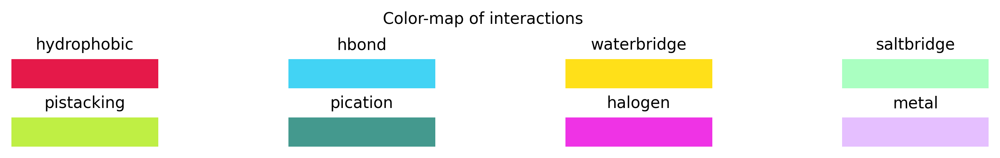
[135]: